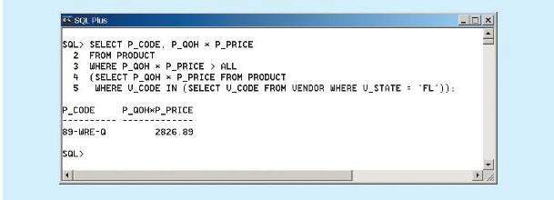
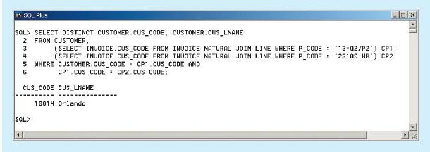
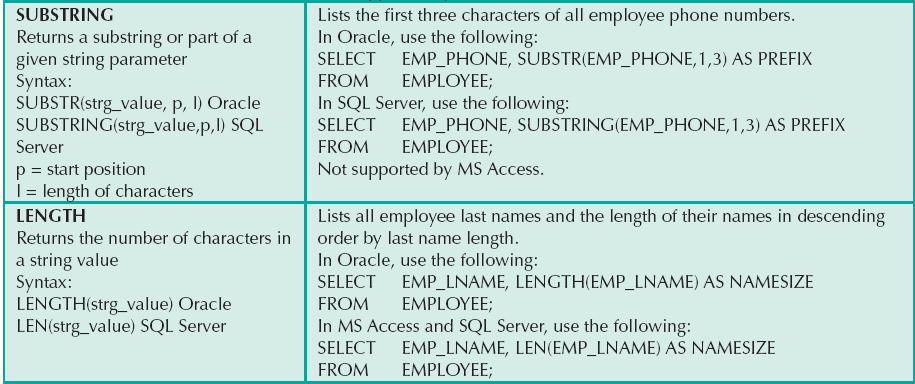
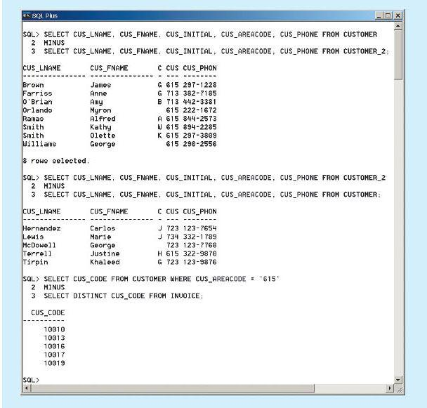
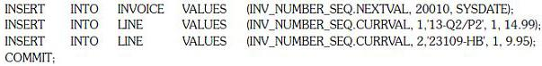
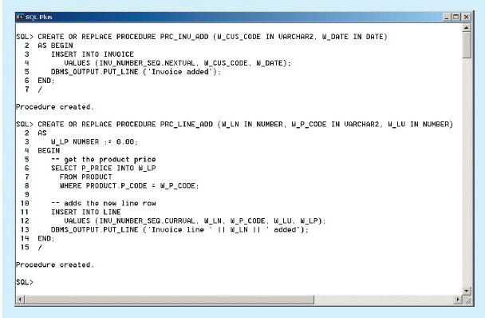
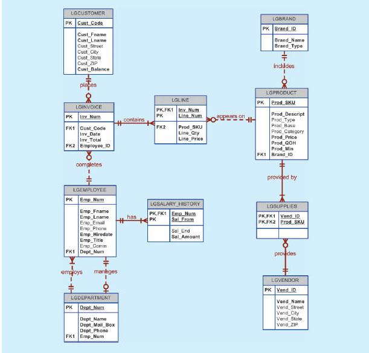
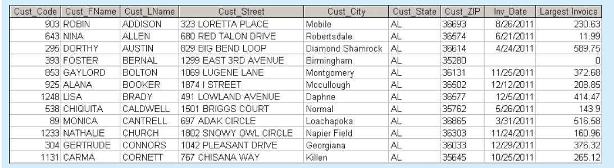
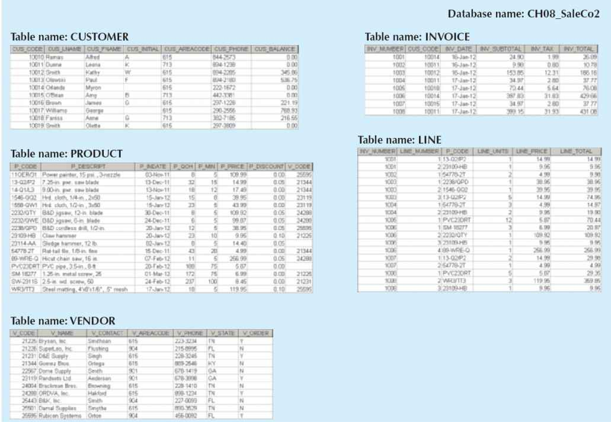

How to use the advanced SQL JOIN operator syntax
How to use the advanced SQL JOIN operator syntaxIn this chapter, you will learn:
How to use the advanced SQL JOIN operator syntax
About the different types of subqueries and correlated queries
How to use SQL functions to manipulate dates, strings, and other data
About the relational set operators UNION, UNION ALL, INTERSECT, and MINUS
How to create and use views and updatable views
How to create and use triggers and stored procedures
How to create embedded SQL
Preview
In Chapter 7, Introduction to Structured Query Language (SQL), you learned the basic SQL data definition and data manipulation commands used to create and manipulate relational data. In this chapter, you build on that knowledge and learn how to use more advanced SQL features.
In this chapter, you will learn about the SQL relational set operators (UNION, INTERSECT, and MINUS) and how they are used to merge the results of multiple queries. Joins are at the heart of SQL, so you must learn how to use the SQL JOIN statement to extract information from multiple tables. In the previous chapter, you learned how cascading queries inside other queries can be useful in certain circumstances. In this chapter, you will also learn about the different styles of subqueries you can implement in a SELECT statement. Finally, you will learn more of SQL’s many functions to extract information from data, including manipulation of dates and strings and computations based on stored or even derived data.
In the real world, business procedures require the execution of clearly defined actions when a specific event occurs, such as the addition of a new invoice or a student’s enrollment in a class. Such procedures can be applied within the DBMS through the use of triggers and stored procedures. In addition, SQL facilitates the application of business procedures when it is embedded in a programming language such as Visual Basic .NET, C#, or COBOL.
 ONLINE CONTENT
ONLINE CONTENT
Although most of the examples used in this chapter are shown in Oracle, you could also use MS SQL Server. The Website for this book, www.cengagebrain.com, provides you with the ADVSQLDBINIT.SQL script file (Oracle and MS SQL versions) to create the tables and load the data used in this chapter. There you will also find additional SQL script files to demonstrate each of the commands shown in this chapter.
The relational join operation merges rows from two tables and returns the rows with one of the following conditions:
• Have common values in common columns (natural join).
• Meet a given join condition (equality or inequality).
• Have common values in common columns or have no matching values (outer join).
In Chapter 7, you learned how to use the SELECT statement in conjunction with the WHERE clause to join two or more tables. For example, you can join the PRODUCT and VENDOR tables through their common V_CODE by writing the following:
SELECT P_CODE, P_DESCRIPT, P_PRICE, V_NAME
FROM PRODUCT, VENDOR
WHERE PRODUCT.V_CODE = VENDOR.V_CODE;
The preceding SQL join syntax is sometimes referred to as an “old-style” join. Note that the FROM clause contains the tables being joined and that the WHERE clause contains the condition(s) used to join the tables.
Note the following points about the preceding query:
• The FROM clause indicates which tables are to be joined. If three or more tables are included, the join operation takes place two tables at a time, from left to right. For example, if you are joining tables T1, T2, and T3, the first join is table T1 with T2; the results of that join are then joined to table T3.
• The join condition in the WHERE clause tells the SELECT statement which rows will be returned. In this case, the SELECT statement returns all rows for which the V_CODE values in the PRODUCT and VENDOR tables are equal.
• The number of join conditions is always equal to the number of tables being joined minus one. For example, if you join three tables (T1, T2, and T3), you will have two join conditions (j1 and j2). All join conditions are connected through an AND logical operator. The first join condition (j1) defines the join criteria for T1 and T2. The second join condition (j2) defines the join criteria for the output of the first join and T3.
• Generally, the join condition will be an equality comparison of the primary key in one table and the related foreign key in the second table.
Join operations can be classified as inner joins and outer joins. The inner join is the traditional join in which only rows that meet a given criterion are selected. The join criterion can be an equality condition (also called a natural join or an equijoin) or an inequality condition (also called a theta join). An outer join returns not only the matching rows but the rows with unmatched attribute values for one table or both tables to be joined. The SQL standard also introduces a special type of join, called a cross join, that returns the same result as the Cartesian product of two sets or tables.
In this section, you will learn various ways to express join operations that meet the ANSI SQL standard, as outlined in Table 8.1. Remember that not all DBMS vendors provide the same level of SQL support and that some do not support the join styles shown in this section. Oracle 11g is used to demonstrate the following queries; refer to your DBMS manual if you are using a different DBMS.
TABLE 8.1 SQL Join Expression Styles
A cross join performs a relational product (also known as the Cartesian product) of two tables. The cross join syntax is:
SELECT column-list FROM table1 CROSS JOIN table2
For example, the following command:
SELECT * FROM INVOICE CROSS JOIN LINE;
performs a cross join of the INVOICE and LINE tables that generates 144 rows. (There are 8 invoice rows and 18 line rows, yielding 8 × 18 = 144 rows.)
You can also perform a cross join that yields only specified attributes. For example, you can specify:
SELECT INVOICE.INV_NUMBER, CUS_CODE, INV_DATE, P_CODE
FROM INVOICE CROSS JOIN LINE;
The results generated through that SQL statement can also be generated by using the following syntax:
SELECT INVOICE.INV_NUMBER, CUS_CODE, INV_DATE, P_CODE
FROM INVOICE, LINE;
Recall from Chapter 3 that a natural join returns all rows with matching values in the matching columns and eliminates duplicate columns. This style of query is used when the tables share one or more common attributes with common names. The natural join syntax is:
SELECT column-list FROM table1 NATURAL JOIN table2
The natural join will perform the following tasks:
• Determine the common attribute(s) by looking for attributes with identical names and compatible data types.
• Select only the rows with common values in the common attribute(s).
• If there are no common attributes, return the relational product of the two tables.
The following example performs a natural join of the CUSTOMER and INVOICE tables and returns only selected attributes:
SELECT CUS_CODE, CUS_LNAME, INV_NUMBER, INV_DATE
FROM CUSTOMER NATURAL JOIN INVOICE;
The SQL code and its results are shown at the top of Figure 8.1.
You are not limited to two tables when performing a natural join. For example, you can perform a natural join of the INVOICE, LINE, and PRODUCT tables and project only selected attributes by writing the following:
SELECT INV_NUMBER, P_CODE, P_DESCRIPT, LINE_UNITS, LINE_PRICE
FROM INVOICE NATURAL JOIN LINE NATURAL JOIN PRODUCT;
The SQL code and its results are shown at the bottom of Figure 8.1.
One important difference between the natural join and the old-style join syntax is that the natural join does not require the use of a table qualifier for the common attributes. In the first natural join example, you projected CUS_CODE. However, the projection did not require any table qualifier, even though the CUS_CODE attribute appears in both the CUSTOMER and INVOICE tables. The same can be said of the INV_NUMBER attribute in the second natural join example.
FIGURE 8.1 NATURAL JOIN results
SOURCE: Course Technology/Cengage Learning
A second way to express a join is through the USING keyword. The query returns only the rows with matching values in the column indicated in the USING clause—and that column must exist in both tables. The syntax is:
SELECT column-list FROM table1 JOIN table2 USING (common-column)
To see the JOIN USING query in action, perform a join of the INVOICE and LINE tables by writing the following:
SELECT INV_NUMBER, P_CODE, P_DESCRIPT, LINE_UNITS, LINE_PRICE
FROM INVOICE JOIN LINE USING (INV_NUMBER) JOIN PRODUCT USING (P_CODE);
The SQL statement produces the results shown in Figure 8.2.
SOURCE: Course Technology/Cengage Learning
As with the NATURAL JOIN command, the JOIN USING operand does not require table qualifiers. As a matter of fact, Oracle will return an error if you specify the table name in the USING clause.
The previous two join styles use common attribute names in the joining tables. Another way to express a join when the tables have no common attribute names is to use the JOIN ON operand. The query will return only the rows that meet the indicated join condition. The join condition will typically include an equality comparison expression of two columns. (The columns may or may not share the same name, but obviously they must have comparable data types.) The syntax is:
SELECT column-list FROM table1 JOIN table2 ON join-condition
The following example performs a join of the INVOICE and LINE tables using the ON clause. The result is shown in Figure 8.3.
SELECT INVOICE.INV_NUMBER, PRODUCT.P_CODE, P_DESCRIPT, LINE_UNITS, LINE_PRICE
FROM INVOICE JOIN LINE ON INVOICE.INV_NUMBER = LINE.INV_NUMBER
JOIN PRODUCT ON LINE.P_CODE = PRODUCT.P_CODE;
SOURCE: Course Technology/Cengage Learning
Unlike the NATURAL JOIN and JOIN USING operands, the JOIN ON clause requires a table qualifier for the common attributes. If you do not specify the table qualifier, you will get a “column ambiguously defined” error message.
Keep in mind that the JOIN ON syntax lets you perform a join even when the tables do not share a common attribute name. For example, to generate a list of all employees with the managers’ names, you can use the following (recursive) query:
| SELECT | E.EMP_MGR, M.EMP_LNAME, E.EMP_NUM, E.EMP_LNAME |
| FROM | EMP E JOIN EMP M ON E.EMP_MGR = M.EMP_NUM |
| ORDER BY | E.EMP_MGR; |
An outer join returns not only the rows matching the join condition (that is, rows with matching values in the common columns), it returns the rows with unmatched values. The ANSI standard defines three types of outer joins: left, right, and full. The left and right designations reflect the order in which the tables are processed by the DBMS. Remember that join operations take place two tables at a time. The first table named in the FROM clause will be the left side, and the second table named will be the right side. If three or more tables are being joined, the result of joining the first two tables becomes the left side, and the third table becomes the right side.
The left outer join returns not only the rows matching the join condition (that is, rows with matching values in the common column), it returns the rows in the left table with unmatched values in the right table. The syntax is:
SELECT column-list
FROM table1 LEFT [OUTER] JOIN table2 ON join-condition
For example, the following query lists the product code, vendor code, and vendor name for all products and includes those vendors with no matching products:
SELECT P_CODE, VENDOR.V_CODE, V_NAME
FROM VENDOR LEFT JOIN PRODUCT ON VENDOR.V_CODE = PRODUCT.V_CODE;
The preceding SQL code and its results are shown in Figure 8.4.
SOURCE: Course Technology/Cengage Learning
The right outer join returns not only the rows matching the join condition (that is, rows with matching values in the common column), it returns the rows in the right table with unmatched values in the left table. The syntax is:
SELECT column-list
FROM table1 RIGHT [OUTER] JOIN table2 ON join-condition
For example, the following query lists the product code, vendor code, and vendor name for all products and includes products that do not have a matching vendor code:
SELECT P_CODE, VENDOR.V_CODE, V_NAME
FROM VENDOR RIGHT JOIN PRODUCT ON VENDOR.V_CODE = PRODUCT.V_CODE;
The SQL code and its output are shown in Figure 8.5.
SOURCE: Course Technology/Cengage Learning
The full outer join returns not only the rows matching the join condition (that is, rows with matching values in the common column), it returns all of the rows with unmatched values in the table on either side. The syntax is:
SELECT column-list
FROM table1 FULL [OUTER] JOIN table2 ON join-condition
For example, the following query lists the product code, vendor code, and vendor name for all products and includes all product rows (products without matching vendors) as well as all vendor rows (vendors without matching products):
SELECT P_CODE, VENDOR.V_CODE, V_NAME
FROM VENDOR FULL JOIN PRODUCT ON VENDOR.V_CODE = PRODUCT.V_CODE;
The SQL code and its results are shown in Figure 8.6.
SOURCE: Course Technology/Cengage Learning
8.2 SUBQUERIES AND CORRELATED QUERIES
The use of joins in a relational database allows you to get information from two or more tables. For example, the following query allows you to get customer data with their respective invoices by joining the CUSTOMER and INVOICE tables.
SELECT INV_NUMBER, INVOICE.CUS_CODE, CUS_LNAME, CUS_FNAME
FROM CUSTOMER, INVOICE
WHERE CUSTOMER.CUS_CODE = INVOICE.CUS_CODE;
In the previous query, the data from both tables (CUSTOMER and INVOICE) are processed at once, matching rows with shared CUS_CODE values.
However, it is often necessary to process data based on other processed data. For example, suppose that you want to generate a list of vendors who do not provide products. (Recall that not all vendors in the VENDOR table have provided products—some are only potential vendors.) In Chapter 7, you learned that you could generate such a list by writing the following query:
SELECT V_CODE, V_NAME FROM VENDOR
WHERE V_CODE NOT IN (SELECT V_CODE FROM PRODUCT);
Similarly, to generate a list of all products with a price greater than or equal to the average product price, you can write the following query:
SELECT P_CODE, P_PRICE FROM PRODUCT
WHERE P_PRICE >= (SELECT AVG(P_PRICE) FROM PRODUCT);
In both queries, you needed to get information that was not previously known:
• What vendors provide products?
• What is the average price of all products?
In both cases, you used a subquery to generate the required information, which could then be used as input for the originating query.
You learned how to use subqueries in Chapter 7; review their basic characteristics:
• A subquery is a query (SELECT statement) inside a query.
• A subquery is normally expressed inside parentheses.
• The first query in the SQL statement is known as the outer query.
• The query inside the SQL statement is known as the inner query.
• The inner query is executed first.
• The output of an inner query is used as the input for the outer query.
• The entire SQL statement is sometimes referred to as a nested query.
In this section, you learn more about the practical use of subqueries. You already know that a subquery is based on the use of the SELECT statement to return one or more values to another query, but subqueries have a wide range of uses. For example, you can use a subquery within a SQL data manipulation language (DML) statement such as INSERT, UPDATE, or DELETE, in which a value or list of values (such as multiple vendor codes or a table) is expected. Table 8.2 uses simple examples to summarize the use of SELECT subqueries in DML statements.
TABLE 8.2 SELECT Subquery Examples
Using the examples in Table 8.2, note that the subquery is always on the right side of a comparison or assigning expression. Also, a subquery can return one or more values. To be precise, the subquery can return the following:
• One single value (one column and one row). This subquery is used anywhere a single value is expected, as in the right side of a comparison expression. An example is the preceding UPDATE subquery, in which you assigned the average price to the product’s price. Obviously, when you assign a value to an attribute, you are assigning a single value, not a list of them. Therefore, the subquery must return only one value (one column, one row). If the query returns multiple values, the DBMS will generate an error.
• A list of values (one column and multiple rows). This type of subquery is used anywhere a list of values is expected, such as when using the IN clause—for example, when comparing the vendor code to a list of vendors. Again, in this case, there is only one column of data with multiple value instances. This type of subquery is used frequently in combination with the IN operator in a WHERE conditional expression.
• A virtual table (multicolumn, multirow set of values). This type of subquery can be used anywhere a table is expected, such as when using the FROM clause. You will see an example later in this chapter.
It is important to note that a subquery can return no values at all; it is a NULL. In such cases, the output of the outer query might result in an error or a null empty set, depending on where the subquery is used (in a comparison, an expression, or a table set).
In the following sections, you will learn how to write subqueries within the SELECT statement to retrieve data from the database.
The most common type of subquery uses an inner SELECT subquery on the right side of a WHERE comparison expression. For example, to find all products with a price greater than or equal to the average product price, you write the following query:
SELECT P_CODE, P_PRICE FROM PRODUCT
WHERE P_PRICE >= (SELECT AVG(P_PRICE) FROM PRODUCT);
The output of the preceding query is shown in Figure 8.7. Note that this type of query, when used in a >, <, =, >=, or <= conditional expression, requires a subquery that returns only one value (one column, one row). The value generated by the subquery must be of a comparable data type; if the attribute to the left of the comparison symbol is a character type, the subquery must return a character string. Also, if the query returns more than a single value, the DBMS will generate an error.
Subqueries can also be used in combination with joins. For example, the following query lists all customers who ordered a claw hammer:
SELECT DISTINCT CUS_CODE, CUS_LNAME, CUS_FNAME
FROM CUSTOMER JOIN INVOICE USING (CUS_CODE)
JOIN LINE USING (INV_NUMBER)
JOIN PRODUCT USING (P_CODE)
WHERE P_CODE = (SELECT P_CODE FROM PRODUCT WHERE P_DESCRIPT = ‘Claw hammer’);
The result of the query is shown in Figure 8.7.
FIGURE 8.7 WHERE subquery examples
SOURCE: Course Technology/Cengage Learning
In the preceding example, the inner query finds the P_CODE for the claw hammer. The P_CODE is then used to restrict the selected rows to those in which the P_CODE in the LINE table matches the P_CODE for “Claw hammer.” Note that the previous query could have been written this way:
SELECT DISTINCT CUS_CODE, CUS_LNAME, CUS_FNAME
FROM CUSTOMER JOIN INVOICE USING (CUS_CODE)
JOIN LINE USING (INV_NUMBER)
JOIN PRODUCT USING (P_CODE)
WHERE P_DESCRIPT = ‘Claw hammer’;
If the original query encounters the “Claw hammer” string in more than one product description, you get an error message. To compare one value to a list of values, you must use an IN operand, as shown in the next section.
What if you wanted to find all customers who purchased a hammer or any kind of saw or saw blade? Note that the product table has two different types of hammers: a claw hammer and a sledge hammer. Also, there are multiple occurrences of products that contain “saw” in their product descriptions, including saw blades and jigsaws. In such cases, you need to compare the P_CODE not to one product code (a single value), but to a list of product code values. When you want to compare a single attribute to a list of values, you use the IN operator. When the P_CODE values are not known beforehand, but they can be derived using a query, you must use an IN subquery. The following example lists all customers who have purchased hammers, saws, or saw blades.
SELECT DISTINCT CUS_CODE, CUS_LNAME, CUS_FNAME
FROM CUSTOMER JOIN INVOICE USING (CUS_CODE)
JOIN LINE USING (INV_NUMBER)
JOIN PRODUCT USING (P_CODE)
WHERE P_CODE IN (SELECT P_CODE FROM PRODUCT
WHERE P_DESCRIPT LIKE '%hammer%'
OR P_DESCRIPT LIKE ‘%saw%’);
The result of the query is shown in Figure 8.8.
FIGURE 8.8 IN subquery example
SOURCE: Course Technology/Cengage Learning
Just as you can use subqueries with the WHERE clause, you can use a subquery with a HAVING clause. The HAVING clause is used to restrict the output of a GROUP BY query by applying conditional criteria to the grouped rows. For example, to list all products with a total quantity sold greater than the average quantity sold, you would write the following query:
SELECT P_CODE, SUM(LINE_UNITS)
FROM LINE
GROUP BY P_CODE
HAVING SUM(LINE_UNITS) > (SELECT AVG(LINE_UNITS) FROM LINE);
The result of the query is shown in Figure 8.9.
FIGURE 8.9 HAVING subquery example
SOURCE: Course Technology/Cengage Learning
8.2.4 MULTIROW SUBQUERY OPERATORS: ANY AND ALL
So far, you have learned that you must use an IN subquery to compare a value to a list of values. However, the IN subquery uses an equality operator; that is, it selects only those rows that are equal to at least one of the values in the list. What happens if you need to make an inequality comparison ( > or < ) of one value to a list of values?
For example, suppose you want to know which products cost more than all individual products provided by vendors from Florida:
The result of the query is shown in Figure 8.10.
It is important to note the following points about the query and its output in Figure 8.10:
• The query is a typical example of a nested query.
• The query has one outer SELECT statement with a SELECT subquery (call it sqA) that contains a second SELECT subquery (call it sqB).
• The last SELECT subquery (sqB) is executed first and returns a list of all vendors from Florida.
• The first SELECT subquery (sqA) uses the output of the second SELECT subquery (sqB). The sqA subquery returns the list of costs for all products provided by vendors from Florida.
FIGURE 8.10 Multirow subquery operator example

SOURCE: Course Technology/Cengage Learning
• The use of the ALL operator allows you to compare a single value (P_QOH * P_PRICE) with a list of values returned by the first subquery (sqA) using a comparison operator other than equals.
• For a row to appear in the result set, it has to meet the criterion P_QOH * P_PRICE > ALL of the individual values returned by the subquery sqA. The values returned by sqA are a list of product costs. In fact, “greater than ALL” is equivalent to “greater than the highest product cost of the list.” In the same way, a condition of “less than ALL” is equivalent to “less than the lowest product cost of the list.”
Another powerful operator is the ANY multirow operator, which you can consider the cousin of the ALL multirow operator. The ANY operator allows you to compare a single value to a list of values and select only the rows for which the inventory cost is greater than or less than any value in the list. You could use the equal to ANY operator, which would be the equivalent of the IN operator.
So far you have seen how the SELECT statement uses subqueries within WHERE, HAVING, and IN statements, and how the ANY and ALL operators are used for multirow subqueries. In all of those cases, the subquery was part of a conditional expression, and it always appeared at the right side of the expression. In this section, you will learn how to use subqueries in the FROM clause.
As you already know, the FROM clause specifies the table(s) from which the data will be drawn. Because the output of a SELECT statement is another table (or more precisely, a “virtual” table), you could use a SELECT subquery in the FROM clause. For example, assume that you want to know all customers who have purchased products 13-Q2/ P2 and 23109-HB. All product purchases are stored in the LINE table, so you can easily find out who purchased any given product by searching the P_CODE attribute in the LINE table. In this case, however, you want to know all customers who purchased both products, not just one. You could write the following query:
SELECT DISTINCT CUSTOMER.CUS_CODE, CUSTOMER.CUS_LNAME
FROM CUSTOMER,
(SELECT INVOICE.CUS_CODE FROM INVOICE NATURAL JOIN LINE
WHERE P_CODE = ‘13-Q2/P2’) CP1,
(SELECT INVOICE.CUS_CODE FROM INVOICE NATURAL JOIN LINE
WHERE P_CODE = ‘23109-HB’) CP2
WHERE CUSTOMER.CUS_CODE = CP1.CUS_CODE AND CP1.CUS_CODE = CP2.CUS_CODE;
The result of the query is shown in Figure 8.11.
FIGURE 8.11 FROM subquery example

SOURCE: Course Technology/Cengage Learning
Note in Figure 8.11 that the first subquery returns all customers who purchased product 13-Q2/P2, while the second subquery returns all customers who purchased product 23109-HB. So, in this FROM subquery, you are joining the CUSTOMER table with two virtual tables. The join condition selects only the rows with matching CUS_CODE values in each table (base or virtual).
8.2.6 ATTRIBUTE LIST SUBQUERIES
The SELECT statement uses the attribute list to indicate what columns to project in the resulting set. Those columns can be attributes of base tables, computed attributes, or the result of an aggregate function. The attribute list can also include a subquery expression, also known as an inline subquery. A subquery in the attribute list must return one value; otherwise, an error code is raised. For example, a simple inline query can be used to list the difference between each product’s price and the average product price:
SELECT P_CODE, P_PRICE, (SELECT AVG(P_PRICE) FROM PRODUCT) AS AVGPRICE,
P_PRICE – (SELECT AVG(P_PRICE) FROM PRODUCT) AS DIFF
FROM PRODUCT;
Figure 8.12 shows the result of the query.
In Figure 8.12, note that the inline query output returns one value (the average product’s price) and that the value is the same in every row. Note also that the query uses the full expression instead of the column aliases when computing the difference. In fact, if you try to use the alias in the difference expression, you will get an error message. The column alias cannot be used in computations in the attribute list when the alias is defined in the same attribute list. That DBMS requirement is the result of the way the DBMS parses and executes queries.
Another example will help you understand the use of attribute list subqueries and column aliases. For example, suppose that you want to know the product code, the total sales by product, and the contribution by employee of each product’s sales. To get the sales by product, you need to use only the LINE table. To compute the contribution by employee, you need to know the number of employees (from the EMPLOYEE table). As you study the tables’ structures, you can see that the LINE and EMPLOYEE tables do not share a common attribute. In fact, you do not need a common attribute.
FIGURE 8.12 Inline subquery example
SOURCE: Course Technology/Cengage Learning
You only need to know the total number of employees, not the total employees related to each product. So, to answer the query, you would write the following code:
| SELECT | P_CODE, SUM(LINE_UNITS * LINE_PRICE) AS SALES, |
| (SELECT COUNT(*) FROM EMPLOYEE) AS ECOUNT, | |
| SUM(LINE_UNITS * LINE_PRICE)/(SELECT COUNT(*) FROM EMPLOYEE) AS CONTRIB | |
| FROM | LINE |
| GROUP BY | P_CODE; |
The result of the query is shown in Figure 8.13.
As you can see in Figure 8.13, the number of employees remains the same for each row in the result set. The use of this type of subquery is limited to certain instances when you need to include data from other tables that are not directly related to a main table or tables in the query. The value will remain the same for each row, like a constant in a programming language. (You will learn another use of inline subqueries in Section 8.2.7, Correlated Subqueries.) Note that you cannot use an alias in the attribute list to write the expression that computes the contribution per employee.
FIGURE 8.13 Another example of an inline subquery
SOURCE: Course Technology/Cengage Learning
Another way to write the same query by using column aliases requires the use of a subquery in the FROM clause, as follows:
SELECT P_CODE, SALES, ECOUNT, SALES/ECOUNT AS CONTRIB
FROM (SELECT P_CODE, SUM(LINE_UNITS * LINE_PRICE) AS SALES,
(SELECT COUNT(*) FROM EMPLOYEE) AS ECOUNT
FROM LINE
GROUP BY P_CODE);
In this case, you are actually using two subqueries. The subquery in the FROM clause executes first and returns a virtual table with three columns: P_CODE, SALES, and ECOUNT. The FROM subquery contains an inline subquery that returns the number of employees as ECOUNT. Because the outer query receives the output of the inner query, you can now refer to the columns in the outer subquery by using the column aliases.
Until now, all subqueries you have learned execute independently. That is, each subquery in a command sequence executes in a serial fashion, one after another. The inner subquery executes first; its output is used by the outer query, which then executes until the last outer query finishes (the first SQL statement in the code).
In contrast, a correlated subquery is a subquery that executes once for each row in the outer query. The process is similar to the typical nested loop in a programming language. For example:
will yield the output:
X = 1 Y = 1
X = 1 Y = 2
X = 1 Y = 3
X = 2 Y = 1
X = 2 Y = 2
X = 2 Y = 3
Note that the outer loop X = 1 TO 2 begins the process by setting X = 1, and then the inner loop Y = 1 TO 3 is completed for each X outer loop value. The relational DBMS uses the same sequence to produce correlated subquery results:
1. It initiates the outer query.
2. For each row of the outer query result set, it executes the inner query by passing the outer row to the inner query.
This process is the opposite of that of the subqueries, as you have already seen. The query is called a correlated subquery because the inner query is related to the outer query; the inner query references a column of the outer subquery.
To see the correlated subquery in action, suppose that you want to know all product sales in which the units sold value is greater than the average units sold value for that product (as opposed to the average for all products). In that case, the following procedure must be completed:
1. Compute the average units sold for a product.
2. Compare the average computed in Step 1 to the units sold in each sale row, and then select only the rows in which the number of units sold is greater.
The following correlated query completes the preceding two-step process:
The first example in Figure 8.14 shows the result of the query.
FIGURE 8.14 Correlated subquery examples

SOURCE: Course Technology/Cengage Learning
In the top query and its result in Figure 8.14, note that the LINE table is used more than once, so you must use table aliases. In this case, the inner query computes the average units sold of the product that matches the P_CODE of the outer query P_CODE. That is, the inner query runs once, using the first product code found in the outer LINE table, and returns the average sale for that product. When the number of units sold in the outer LINE row is greater than the average computed, the row is added to the output. Then the inner query runs again, this time using the second product code found in the outer LINE table. The process repeats until the inner query has run for all rows in the outer LINE table. In this case, the inner query will be repeated as many times as there are rows in the outer query.
To verify the results and to provide an example of how you can combine subqueries, you can add a correlated inline subquery to the previous query. (See the second query and its results in Figure 8.14.) As you can see, the new query contains a correlated inline subquery that computes the average units sold for each product. You not only get an answer, you can also verify that the answer is correct.
Correlated subqueries can also be used with the EXISTS special operator. For example, suppose that you want to know the names of all customers who have placed an order lately. In that case, you could use a correlated subquery like the first one shown in Figure 8.15:
FIGURE 8.15 EXISTS correlated subquery examples
SOURCE: Course Technology/Cengage Learning
The second example in Figure 8.15 will help you understand how to use correlated queries. For example, suppose that you want to know what vendors you must contact to order products that are approaching the minimum quantity-on-hand value. In particular, you want to know the vendor code and vendor name for products with a quantity on hand that is less than double the minimum quantity. The query that answers the question is as follows:
In the second query in Figure 8.15, note that:
1. The inner correlated subquery runs using the first vendor.
2. If any products match the condition (the quantity on hand is less than double the minimum quantity), the vendor code and name are listed in the output.
3. The correlated subquery runs using the second vendor, and the process repeats itself until all vendors are used.
The data in databases are the basis of critical business information. Generating information from data often requires many data manipulations. Sometimes such data manipulation involves the decomposition of data elements. For example, an employee’s date of birth can be subdivided into a day, a month, and a year. A product manufacturing code (for example, SE-05-2-09-1234-1-3/12/04-19:26:48) can be designed to record the manufacturing region, plant, shift, production line, employee number, date, and time. For years, conventional programming languages have had special functions that enabled programmers to perform data transformations like the preceding data decompositions. If you know a modern programming language, it is very likely that the SQL functions in this section will look familiar.
SQL functions are very useful tools. You’ll need to use functions when you want to list all employees ordered by year of birth, or when your marketing department wants you to generate a list of all customers ordered by zip code and the first three digits of their telephone numbers. In both of these cases, you’ll need to use data elements that are not present as such in the database; instead, you will need a SQL function that can be derived from an existing attribute. Functions always use a numerical, date, or string value. The value may be part of the command itself (a constant or literal) or it may be an attribute located in a table. Therefore, a function may appear anywhere in a SQL statement where a value or an attribute can be used.
There are many types of SQL functions, such as arithmetic, trigonometric, string, date, and time functions. This section will not explain all of these functions in detail, but it will give you a brief overview of the most useful ones.
NOTE
Although the main DBMS vendors support the SQL functions covered here, the syntax or degree of support will probably differ. In fact, DBMS vendors invariably add their own functions to products to lure new customers. The functions covered in this section represent just a small portion of functions supported by your DBMS. Read your DBMS SQL reference manual for a complete list of available functions.
All SQL-standard DBMSs support date and time functions. All date functions take one parameter of a date or character data type and return a value (character, numeric, or date type). Unfortunately, date/time data types are implemented differently by different DBMS vendors. The problem occurs because the ANSI SQL standard defines date data types, but it does not specify how those data types are to be stored. Instead, it lets the vendor deal with that issue.
Because date/time functions differ from vendor to vendor, this section will cover basic date/time functions for MS Access, SQL Server, and Oracle. Table 8.3 shows a list of selected MS Access and SQL Server date/time functions.
TABLE 8.3 Selected MS Access and SQL Server Date/Time Functions
Table 8.4 shows the equivalent date/time functions used in Oracle. Note that Oracle uses the same function (TO_CHAR) to extract the various parts of a date. Also, another function (TO_DATE) is used to convert character strings to a valid Oracle date format that can be used in date arithmetic.
TABLE 8.4 Selected Oracle Date/Time Functions
Numeric functions can be grouped in many different ways, such as algebraic, trigonometric, and logarithmic. In this section, you will learn two very useful functions. Do not confuse the SQL aggregate functions you saw in the previous chapter with the numeric functions in this section. The first group operates over a set of values (multiple rows—hence, the name aggregate functions), while the numeric functions covered here operate over a single row. Numeric functions take one numeric parameter and return one value. Table 8.5 shows a selected group of available numeric functions.
TABLE 8.5 Selected Numeric Functions
String manipulations are among the most-used functions in programming. If you have ever created a report using any programming language, you know the importance of properly concatenating strings of characters, printing names in uppercase, or knowing the length of a given attribute. Table 8.6 shows a subset of useful string manipulation functions.
TABLE 8.6 Selected String Functions

Conversion functions allow you to take a value of a given data type and convert it to the equivalent value in another data type. In Section 8.3.1, you learned about two basic Oracle SQL conversion functions: TO_CHAR and TO_DATE. Note that the TO_CHAR function takes a date value and returns a character string representing a day, a month, or a year. In the same way, the TO_DATE function takes a character string representing a date and returns an actual date in Oracle format. SQL Server uses the CAST and CONVERT functions to convert one data type to another. A summary of the selected functions is shown in Table 8.7.
TABLE 8.7 Selected Conversion Functions
In Chapter 3, The Relational Database Model, you learned about the eight general relational operators. In this section, you will learn how to use three SQL commands (UNION, INTERSECT, and MINUS) to implement the union, intersection, and difference relational operators.
In previous chapters, you learned that SQL data manipulation commands are set-oriented; that is, they operate over entire sets of rows and columns (tables) at once. You can combine two or more sets to create new sets (or relations). That is precisely what the UNION, INTERSECT, and MINUS statements do. In relational database terms, you can use the words sets, relations, and tables interchangeably because they all provide a conceptual view of the data set as it is presented to the relational database user.
NOTE
The SQL standard defines the operations that all DBMSs must perform on data, but it leaves the implementation details to the DBMS vendors. Therefore, some advanced SQL features might not work on all DBMS implementations. Also, some DBMS vendors might implement additional features not found in the SQL standard. UNION, INTERSECT, and MINUS are the names of the SQL statements implemented in Oracle. The SQL standard uses the keyword EXCEPT to refer to the difference (MINUS) relational operator. Other RDBMS vendors might use a different command name or might not implement a given command at all. To learn more about the ANSI/ISO SQL standards and find out how to obtain the latest standard documents in electronic form, check the ANSI Website (www.ansi.org). As of this writing, the most recent fully approved standard is SQL-2003, which made revisions and additions to the previous standard; most notable is its support for XML data. The SQL-2006 standard extended support for XML and multimedia data. The SQL-2008 standard added INSTEAD OF triggers and the TRUNCATE statement.
UNION, INTERSECT, and MINUS work properly only if relations are union-compatible, which means that the number of attributes must be the same and their corresponding data types must be alike. In practice, some RDBMS vendors require the data types to be compatible but not exactly the same. For example, compatible data types are VARCHAR (35) and CHAR (15). Both attributes store character (string) values; the only difference is the string size. Another example of compatible data types is NUMBER and SMALLINT. Both data types are used to store numeric values.
NOTE
Some DBMS products might require union-compatible tables to have identical data types.
ONLINE CONTENT
The Website for this book, www.cengagebrain.com, provides SQL script files (Oracle and MS SQL Server) to demonstrate the UNION, INTERSECT, and MINUS commands. It also provides the Ch08_SaleCo MS Access database, which contains supported set operator alternative queries.
Suppose that SaleCo has bought another company. SaleCo’s management wants to make sure that the acquired company’s customer list is properly merged with its own customer list. Because some customers might have purchased goods from both companies, the two lists might contain common customers. SaleCo’s management wants to make sure that customer records are not duplicated when the two customer lists are merged. The UNION query is a perfect tool for generating a combined listing of customers—one that excludes duplicate records.
The UNION statement combines rows from two or more queries without including duplicate rows. The syntax of the UNION statement is:
query UNION query
In other words, the UNION statement combines the output of two SELECT queries. (Remember that the SELECT statements must be union-compatible. That is, they must return the same number of attributes and similar data types.)
To demonstrate the use of the UNION statement in SQL, use the CUSTOMER and CUSTOMER_2 tables in the Ch08_SaleCo database. To show the combined CUSTOMER and CUSTOMER_2 records without duplicates, the UNION query is written as follows:
SELECT | CUS_LNAME, CUS_FNAME, CUS_INITIAL, CUS_AREACODE, CUS_PHONE |
FROM | CUSTOMER |
UNION | |
SELECT | CUS_LNAME, CUS_FNAME, CUS_INITIAL, CUS_AREACODE, CUS_PHONE |
FROM | CUSTOMER_2; |
Figure 8.16 shows the contents of the CUSTOMER and CUSTOMER_2 tables and the result of the UNION query. Although MS Access is used to show the results here, similar results can be obtained with Oracle.
Note the following in Figure 8.16:
• The CUSTOMER table contains 10 rows, while the CUSTOMER_2 table contains seven rows.
• Customers Dunne and Olowski are included in the CUSTOMER table as well as the CUSTOMER_2 table.
• The UNION query yields 15 records because the duplicate records of customers Dunne and Olowski are not included. In short, the UNION query yields a unique set of records.
FIGURE 8.16 UNION query results
SOURCE: Course Technology/Cengage Learning
NOTE
The SQL standard calls for the elimination of duplicate rows when the UNION SQL statement is used. However, some DBMS vendors might not adhere to that standard. Check your DBMS manual to see if the UNION statement is supported, and if so, how it is supported.
The UNION statement can be used to unite more than just two queries. For example, assume that you have four union-compatible queries named T1, T2, T3, and T4. With the UNION statement, you can combine the output of all four queries into a single result set. The SQL statement will be similar to this:
SELECT column-list FROM T1
UNION
SELECT column-list FROM T2
UNION
SELECT column-list FROM T3
UNION
SELECT column-list FROM T4;
If SaleCo’s management wants to know how many customers are on both the CUSTOMER and CUSTOMER_2 lists, a UNION ALL query can be used to produce a relation that retains the duplicate rows. Therefore, the following query will keep all rows from both queries (including the duplicate rows) and return 17 rows.
SELECT FROM | CUS_LNAME, CUS_FNAME, CUS_INITIAL, CUS_AREACODE, CUS_PHONE CUSTOMER |
UNION ALL | |
SELECT FROM | CUS_LNAME, CUS_FNAME, CUS_INITIAL, CUS_AREACODE, CUS_PHONE CUSTOMER_2; |
Running the preceding UNION ALL query produces the result shown in Figure 8.17.
FIGURE 8.17 UNION ALL query results
SOURCE: Course Technology/Cengage Learning
Like the UNION statement, the UNION ALL statement can be used to unite more than just two queries.
If SaleCo’s management wants to know which customer records are duplicated in the CUSTOMER and CUSTOMER_2 tables, the INTERSECT statement can be used to combine rows from two queries, returning only the rows that appear in both sets. The syntax for the INTERSECT statement is:
query INTERSECT query
To generate the list of duplicate customer records, you can use the following commands:
SELECT | CUS_LNAME, CUS_FNAME, CUS_INITIAL, CUS_AREACODE, CUS_PHONE |
FROM | CUSTOMER |
INTERSECT | |
SELECT | CUS_LNAME, CUS_FNAME, CUS_INITIAL, CUS_AREACODE, CUS_PHONE |
FROM | CUSTOMER_2; |
The INTERSECT statement can be used to generate additional useful customer information. For example, the following query returns the customer codes for all customers who are in area code 615 and who have made purchases. (If a customer has made a purchase, there must be an invoice record for that customer.)
SELECT | CUS_CODE FROM CUSTOMER WHERE CUS_AREACODE = '615' |
INTERSECT | |
SELECT | DISTINCT CUS_CODE FROM INVOICE; |
Figure 8.18 shows both sets of SQL statements and their output.
FIGURE 8.18 INTERSECT query results
SOURCE: Course Technology/Cengage Learning
NOTE
MS Access does not support the INTERSECT query, nor does it support other complex queries you will explore in this chapter. At least in some cases, Access might be able to give you the desired results if you use an alternative query format or procedure. For example, although Access does not support SQL triggers and stored procedures, you can use Visual Basic code to perform similar actions. However, the objective here is to explain some important standard SQL features.
The MINUS statement in SQL combines rows from two queries and returns only the rows that appear in the first set but not in the second. The syntax for the MINUS statement is:
query MINUS query
For example, if the SaleCo managers want to know which customers in the CUSTOMER table are not found in the CUSTOMER_2 table, they can use the following commands:
SELECT | CUS_LNAME, CUS_FNAME, CUS_INITIAL, CUS_AREACODE, CUS_PHONE |
FROM | CUSTOMER; |
MINUS | |
SELECT | CUS_LNAME, CUS_FNAME, CUS_INITIAL, CUS_AREACODE, CUS_PHONE |
FROM | CUSTOMER_2; |
If the managers want to know which customers in the CUSTOMER_2 table are not found in the CUSTOMER table, they merely switch the table designations:
SELECT | CUS_LNAME, CUS_FNAME, CUS_INITIAL, CUS_AREACODE, CUS_PHONE |
FROM | CUSTOMER_2 |
MINUS | |
SELECT | CUS_LNAME, CUS_FNAME, CUS_INITIAL, CUS_AREACODE, CUS_PHONE |
FROM | CUSTOMER; |
You can extract useful information by combining MINUS with various clauses such as WHERE. For example, the following query returns the customer codes for all customers in area code 615 minus the ones who have made purchases, leaving the customers in area code 615 who have not made purchases.
SELECT | CUS_CODE FROM CUSTOMER WHERE CUS_AREACODE = '615' |
MINUS | |
SELECT | DISTINCT CUS_CODE FROM INVOICE; |
Figure 8.19 shows the preceding three SQL statements and their output.
NOTE
Some DBMS products do not support the INTERSECT or MINUS statements, while others might implement the difference relational operator in SQL as EXCEPT. Consult your DBMS manual to see if the statements illustrated here are supported by your DBMS.
FIGURE 8.19 MINUS query results

SOURCE: Course Technology/Cengage Learning
If your DBMS does not support the INTERSECT or MINUS statements, you can use the IN and NOT IN subqueries to obtain similar results. For example, the following query will produce the same results as the INTERSECT query shown in Section 8.4.3:
SELECT | CUS_CODE FROM CUSTOMER |
WHERE | CUS_AREACODE = '615' AND |
CUS_CODE IN (SELECT DISTINCT CUS_CODE FROM INVOICE); |
Figure 8.20 shows the use of the INTERSECT alternative.
FIGURE 8.20 INTERSECT alternative
NOTE
MS Access will generate an input request for the CUS_AREACODE if you use apostrophes around the area code. (If you supply the 615 area code, the query will execute properly.) You can eliminate the problem by using standard double quotation marks, writing the WHERE clause in the second line of the preceding SQL statement as:
WHERE CUS_AREACODE = “615” AND
MS Access will also accept single quotation marks.
Using the same alternative to the MINUS statement, you can generate the output for the third MINUS query shown in Section 8.4.4 by entering the following:
SELECT | CUS_CODE FROM CUSTOMER |
WHERE | CUS_AREACODE = '615' AND |
CUS_CODE NOT IN (SELECT DISTINCT CUS_CODE FROM INVOICE); |
The results of the query are shown in Figure 8.21. Note that the query output includes only the customers in area code 615 who have not made any purchases and therefore have not generated invoices.
SOURCE: Course Technology/Cengage Learning
8.5 VIRTUAL TABLES: CREATING A VIEW
As you learned earlier, the output of a relational operator such as SELECT is another relation (or table). Suppose that at the end of each day, you would like to have a list of all products to reorder-that is, products with a quantity on hand that is less than or equal to the minimum quantity. Instead of typing the same query at the end of each day, wouldn’t it be better to permanently save that query in the database? That is the function of a relational view. A view is a virtual table based on a SELECT query. The query can contain columns, computed columns, aliases, and aggregate functions from one or more tables. The tables on which the view is based are called base tables.
You can create a view by using the CREATE VIEW command:
CREATE VIEW viewname AS SELECT query
The CREATE VIEW statement is a data definition command that stores the subquery specification—the SELECT statement used to generate the virtual table—in the data dictionary.
The first SQL command set in Figure 8.22 shows the syntax used to create a view named PRICEGT50. This view contains only the designated three attributes (P_DESCRIPT, P_QOH, and P_PRICE) and only rows in which the price is over $50. The second SQL command sequence in Figure 8.22 shows the rows that make up the view.
FIGURE 8.22 Creating a virtual table with the CREATE VIEW command
SOURCE: Course Technology/Cengage Learning
NOTE
Note To Ms Access Users
The CREATE VIEW command is not directly supported in MS Access. To create a view in MS Access, you simply create a SQL query and then save it.
A relational view has several special characteristics:
• You can use the name of a view anywhere a table name is expected in a SQL statement.
• Views are dynamically updated. That is, the view is re-created on demand each time it is invoked. Therefore, if new products are added or deleted to meet the criterion P_PRICE > 50.00, those new products will automatically appear or disappear in the PRICEGT50 view the next time the view is invoked.
• Views provide a level of security in the database because they can restrict users to seeing only specified columns and rows in a table. For example, if you have a company with hundreds of employees in several departments, you could give each department secretary a view of certain attributes only for the employees who belong to that secretary’s department.
• Views may also be used as the basis for reports. For example, if you need a report that shows a summary of total product cost and quantity-on-hand statistics grouped by vendor, you could create a PROD_STATS view as:
SELECT | V_CODE, SUM(P_QOH*P_PRICE) AS TOTCOST, MAX(P_QOH) AS MAXQTY, |
MIN(P_QOH) AS MINQTY, AVG(P_QOH) AS AVGQTY | |
FROM | PRODUCT |
GROUP BY | V_CODE; |
One of the most common operations in production database environments is to use batch update routines to update a master table attribute (field) with transaction data. As the name implies, a batch update routine pools multiple transactions into a single batch to update a master table field in a single operation. For example, a batch update routine is commonly used to update a product’s quantity on hand based on summary sales transactions. Such routines are typically run as overnight batch jobs to update the quantity on hand of products in inventory. For example, the sales transactions performed by traveling salespeople can be entered during periods when the system is offline.
ONLINE CONTENT
For MS Access users, the PRODMASTER and PRODSALES tables are in the Ch08_UV database, which is available at www.cengagebrain.com.
ONLINE CONTENT
For Oracle users, all SQL commands you see in this section are available at www.cengagebrain.com. After you locate the script files (uv-01.sql through uv-04.sql), you can copy and paste the command sequences into your SQL*Plus program.
To perform a batch update routine, begin by defining the master product table (PRODMASTER) and the product monthly sales totals table (PRODSALES) shown in Figure 8.23. Note the 1:1 relationship between the two tables.
FIGURE 8.23 The PRODMASTER and PRODSALES tables
Using the tables in Figure 8.23, update the PRODMASTER table by subtracting the PRODSALES table’s product monthly sales quantity (PS_QTY) from the PRODMASTER table’s PROD_QOH. To produce the required update, the update query would be written like this:
UPDATE PRODMASTER, PRODSALES
SET PRODMASTER.PROD_QOH =
PROD_QOH - PS_QTY
WHERE PRODMASTER.PROD_ID =
PRODSALES.PROD_ID;
Note that the update statement reflects the following sequence of events:
• Join the PRODMASTER and PRODSALES tables.
• Update the PROD_QOH attribute (using the PS_QTY value in the PRODSALES table) for each row of the PRODMASTER table with matching PROD_ID values in the PRODSALES table.
To be used in a batch update, the PRODSALES data must be stored in a base table rather than in a view. The query will work in Access, but Oracle will return the error message shown in Figure 8.24.
FIGURE 8.24 The Oracle UPDATE error message
SOURCE: Course Technology/Cengage Learning
Oracle produced the error message because it expected to find a single table name in the UPDATE statement. In fact, you cannot join tables in the UPDATE statement in Oracle. To solve that problem, you have to create an updatable view. As its name suggests, an updatable view can be used to update attributes in any base table(s) used in the view. You must realize that not all views are updatable. Actually, several restrictions govern updatable views, and some of them are vendor-specific.
NOTE
Keep in mind that the examples in this section are generated in Oracle. To see what restrictions are placed on updatable views by the DBMS you are using, check the appropriate DBMS documentation.
The most common updatable view restrictions are as follows:
• GROUP BY expressions or aggregate functions cannot be used.
• You cannot use set operators such as UNION, INTERSECT, and MINUS.
• Most restrictions are based on the use of JOINs or group operators in views.
To meet the Oracle limitations, an updatable view named PSVUPD has been created, as shown in Figure 8.25.
One easy way to determine whether a view can be used to update a base table is to examine the view’s output. If the primary key columns of the base table you want to update still have unique values in the view, the base table is updatable. For example, if the PROD_ID column of the view returns the A123 or BX34 values more than once, the PRODMASTER table cannot be updated through the view.
After creating the updatable view shown in Figure 8.25, you can use the UPDATE command to update the view, thereby updating the PRODMASTER table. Figure 8.26 shows how the UPDATE command is used and shows the final contents of the PRODMASTER table after the UPDATE has been executed.
Although the batch update procedure just illustrated meets the goal of updating a master table with data from a transaction table, the preferred real-world solution to the update problem is to use procedural SQL, which you will learn about later in this chapter.
FIGURE 8.25 Creating an updatable view in Oracle
SOURCE: Course Technology/Cengage Learning
FIGURE 8.26 PRODMASTER table update, using an updatable view
SOURCE: Course Technology/Cengage Learning
If you use MS Access, you might be familiar with the AutoNumber data type, which you can use to define a column in your table that will be automatically populated with unique numeric values. In fact, if you create a table in MS Access and forget to define a primary key, MS Access will offer to create a primary key column; if you accept, you will notice that MS Access creates a column named “ID” with an AutoNumber data type. After you define a column as an AutoNumber type, every time you insert a row in the table, MS Access will automatically add a value to that column, starting with 1 and increasing the value by 1 in every new row you add. Also, you cannot include that column in your INSERT statements—Access will not let you edit that value at all. MS SQL Server uses the Identity column property to serve a similar purpose. In MS SQL Server, a table can have at most one column defined as an Identity column. This column behaves similarly to an MS Access column with the AutoNumber data type.
Oracle does not support the AutoNumber data type or the Identity column property. Instead, you can use a “sequence” to assign values to a column on a table. However, an Oracle sequence is very different from the Access AutoNumber data type and deserves close scrutiny:
• Oracle sequences are an independent object in the database. (Sequences are not a data type.)
• Oracle sequences have a name and can be used anywhere a value is expected.
• Oracle sequences are not tied to a table or a column.
• Oracle sequences generate a numeric value that can be assigned to any column in any table.
• The table attribute to which you assigned a value based on a sequence can be edited and modified.
• An Oracle sequence can be created and deleted anytime.
The basic syntax to create a sequence in Oracle is:
CREATE SEQUENCE name [START WITH n] [INCREMENT BY n] [CACHE | NOCACHE]
where:
• name is the name of the sequence.
• n is an integer value that can be positive or negative.
• START WITH specifies the initial sequence value. (The default value is 1.)
• INCREMENT BY determines the value by which the sequence is incremented. (The default increment value is 1. The sequence increment can be positive or negative to enable you to create ascending or descending sequences.)
• The CACHE or NOCACHE clause indicates whether Oracle will preallocate sequence numbers in memory. (Oracle preallocates 20 values by default.)
For example, you could create a sequence to automatically assign values to the customer code each time a new customer is added, and create another sequence to automatically assign values to the invoice number each time a new invoice is added. The SQL code to accomplish those tasks is:
CREATE SEQUENCE CUS_CODE_SEQ START WITH 20010 NOCACHE;
CREATE SEQUENCE INV_NUMBER_SEQ START WITH 4010 NOCACHE;
You can check all of the sequences you have created by using the following SQL command, as illustrated in Figure 8.27:
SELECT * FROM USER_SEQUENCES;

SOURCE: Course Technology/Cengage Learning
To use sequences during data entry, you must use two special pseudo-columns: NEXTVAL and CURRVAL. NEXTVAL retrieves the next available value from a sequence, and CURRVAL retrieves the current value of a sequence. For example, you can use the following code to enter a new customer:
INSERT INTO CUSTOMER
VALUES (CUS_CODE_SEQ.NEXTVAL,‘Connery’, ‘Sean’, NULL, ‘615’, ‘898-2007’, 0.00);
The preceding SQL statement adds a new customer to the CUSTOMER table and assigns the value 20010 to the CUS_CODE attribute. Examine some important sequence characteristics:
• CUS_CODE_SEQ.NEXTVAL retrieves the next available value from the sequence.
• Each time you use NEXTVAL, the sequence is incremented.
• Once a sequence value is used (through NEXTVAL), it cannot be used again. If your SQL statement rolls back for some reason, the sequence value does not roll back. If you issue another SQL statement (with another NEXTVAL), the next available sequence value will be returned to the user—it will look like the sequence skips a number.
• You can issue an INSERT statement without using the sequence.
CURRVAL retrieves the current value of a sequence—that is, the last sequence number used, which was generated with a NEXTVAL. You cannot use CURRVAL unless a NEXTVAL was issued previously in the same session. The main use for CURRVAL is to enter rows in dependent tables. For example, the INVOICE and LINE tables are related in a one-to-many relationship through the INV_NUMBER attribute. You can use the INV_NUMBER_SEQ sequence to automatically generate invoice numbers. Then, using CURRVAL, you can get the latest INV_NUMBER used and assign it to the related INV_NUMBER foreign key attribute in the LINE table. For example:

The results are shown in Figure 8.28.
FIGURE 8.28 Oracle sequence examples
SOURCE: Course Technology/Cengage Learning
In the example shown in Figure 8.28, INV_NUMBER_SEQ.NEXTVAL retrieves the next available sequence number (4010) and assigns it to the INV_NUMBER column in the INVOICE table. Also note the use of the SYSDATE attribute to automatically insert the current date in the INV_DATE attribute. Next, the following two INSERT statements add the products being sold to the LINE table. In this case, INV_NUMBER_SEQ.CURRVAL refers to the last-used INV_NUMBER_SEQ sequence number (4010). In this way, the relationship between INVOICE and LINE is established automatically. The COMMIT statement at the end of the command sequence makes the changes permanent. Of course, you can also issue a ROLLBACK statement, in which case the rows you inserted in the INVOICE and LINE tables would be rolled back (but remember that the sequence number would not). Once you use a sequence number with NEXTVAL, there is no way to reuse it! This “no-reuse” characteristic is designed to guarantee that the sequence will always generate unique values.
Remember these points when you think about sequences:
• The use of sequences is optional. You can enter the values manually.
• A sequence is not associated with a table. As in the examples in Figure 8.28, two distinct sequences were created (one for customer code values and one for invoice number values), but you could have created just one sequence and used it to generate unique values for both tables.
NOTE
The SQL standard defines the use of Identity columns and sequence objects. However, some DBMS vendors might not adhere to the standard. Check your DBMS documentation.
Finally, you can drop a sequence from a database with a DROP SEQUENCE command. For example, to drop the sequences created earlier, you would type:
DROP SEQUENCE CUS_CODE_SEQ;
DROP SEQUENCE INV_NUMBER_SEQ;
Dropping a sequence does not delete the values you assigned to table attributes (CUS_CODE and INV_NUMBER); it deletes only the sequence object from the database. The values you assigned to the table columns (CUS_CODE and INV_NUMBER) remain in the database.
Because the CUSTOMER and INVOICE tables are used in the following examples, you will want to keep the original data set. Therefore, you can delete the customer, invoice, and line rows you just added by using the following commands:
DELETE FROM INVOICE WHERE INV_NUMBER = 4010;
DELETE FROM CUSTOMER WHERE CUS_CODE = 20010;
COMMIT;
Those commands delete the recently added invoice, all of the invoice line rows associated with the invoice (the LINE table’s INV_NUMBER foreign key was defined with the ON DELETE CASCADE option), and the recently added customer. The COMMIT statement saves all changes to permanent storage.
NOTE
At this point, you need to re-create the CUS_CODE_SEQ and INV_NUMBER_SEQ sequences, as they will be used again later in the chapter. Enter:
CREATE SEQUENCE CUS_CODE_SEQ START WITH 20010 NOCACHE;
CREATE SEQUENCE INV_NUMBER_SEQ START WITH 4010 NOCACHE;
Thus far, you have learned to use SQL to read, write, and delete data in the database. For example, you learned to update values in a record, to add records, and to delete records. Unfortunately, SQL does not support the conditional execution of procedures that are typically supported by a programming language using the general format:
IF <condition>
THEN <perform procedure>
ELSE <perform alternate procedure>
END IF
SQL also fails to support looping operations in programming languages that permit the execution of repetitive actions typically encountered in a programming environment. The typical format is:
DO WHILE
<perform procedure>
END DO
Traditionally, if you wanted to perform a conditional or looping type of operation (that is, a procedural type of programming using an IF-THEN-ELSE or DO-WHILE statement), you would use a programming language such as Visual Basic .NET, C#, or COBOL. This explains why many older (so-called legacy) business applications are based on enormous numbers of COBOL program lines. Although that approach is still common, it usually involves the duplication of application code in many programs. Therefore, when procedural changes are required, modifications must be made in many different programs. An environment characterized by such redundancies often creates data management problems.
A better approach is to isolate critical code and then have all application programs call the shared code. The advantage of this modular approach is that the application code is isolated in a single program, thus yielding better maintenance and logic control. In any case, the rise of distributed databases and object-oriented databases required that more application code be stored and executed within the database. (For more information on these databases, see Chapter 12, Distributed Database Management Systems, and Appendix G at www.cengagebrain.com, respectively.) To meet that requirement, most RDBMS vendors created numerous programming language extensions. Those extensions include:
• Flow-control procedural programming structures (IF-THEN-ELSE, DO-WHILE) for logic representation
• Variable declaration and designation within the procedures
• Error management
To remedy the lack of procedural functionality in SQL and to provide some standardization within the many vendor offerings, the SQL-99 standard defined the use of persistent stored modules. A persistent stored module (PSM) is a block of code containing standard SQL statements and procedural extensions that is stored and executed at the DBMS server. The PSM represents business logic that can be encapsulated, stored, and shared among multiple database users. A PSM lets an administrator assign specific access rights to a stored module to ensure that only authorized users can use it. Support for persistent stored modules is left to each vendor to implement. In fact, for many years, some RDBMSs (such as Oracle, SQL Server, and DB2) supported stored procedure modules within the database before the official standard was promulgated.
MS SQL Server implements persistent stored modules via Transact-SQL and other language extensions, the most notable of which are the .NET family of programming languages. Oracle implements PSMs through its procedural SQL language. Procedural Language SQL (PL/SQL) is a language that makes it possible to use and store procedural code and SQL statements within the database and to merge SQL and traditional programming constructs, such as variables, conditional processing (IF-THEN-ELSE), basic loops (FOR and WHILE loops), and error trapping. The procedural code is executed as a unit by the DBMS when it is invoked (directly or indirectly) by the end user. End users can use PL/SQL to create:
• Anonymous PL/SQL blocks
• Triggers (covered in Section 8.7.1)
• Stored procedures (covered in Section 8.7.2 and Section 8.7.3)
• PL/SQL functions (covered in Section 8.7.4)
Do not confuse PL/SQL functions with SQL’s built-in aggregate functions such as MIN and MAX. SQL built-in functions can be used only within SQL statements, while PL/SQL functions are mainly invoked within PL/SQL programs such as triggers and stored procedures. Functions can also be called within SQL statements, provided that they conform to very specific rules that are dependent on your DBMS environment.
NOTE
PL/SQL, triggers, and stored procedures are illustrated within the context of an Oracle DBMS. All examples in the following sections assume the use of Oracle RDBMS.
Using Oracle SQL*Plus, you can write a PL/SQL code block by enclosing the commands inside BEGIN and END clauses. For example, the following PL/SQL block inserts a new row in the VENDOR table, as shown in Figure 8.29.
BEGIN
INSERT INTO VENDOR
VALUES (25678,‘Microsoft Corp.’,‘Bill Gates’,‘765’,‘546-8484’,‘WA’,‘N’);
END;
FIGURE 8.29 Anonymous PL/SQL block examples
SOURCE: Course Technology/Cengage Learning
The PL/SQL block shown in Figure 8.29 is known as an anonymous PL/SQL block because it has not been given a specific name. The block’s last line uses a forward slash (/) to indicate the end of the command-line entry. This type of PL/SQL block executes as soon as you press Enter after typing the forward slash. Following the PL/SQL block’s execution, you will see the message “PL/SQL procedure successfully completed.”
Suppose that you want a more specific message displayed on the SQL*Plus screen after a procedure is completed, such as “New Vendor Added.” To produce a more specific message, you must do two things:
1. At the SQL > prompt, type SET SERVEROUTPUT ON. This SQL*Plus command enables the client console (SQL*Plus) to receive messages from the server side (Oracle DBMS). Remember, just like standard SQL, the PL/SQL code (anonymous blocks, triggers, and procedures) are executed at the server side, not at the client side. To stop receiving messages from the server, you would enter SET SERVEROUTPUT OFF.
2. To send messages from the PL/SQL block to the SQL*Plus console, use the DBMS_OUTPUT.PUT_LINE function.
The following anonymous PL/SQL block inserts a row in the VENDOR table and displays the message “New Vendor Added!” (see Figure 8.29).
BEGIN
INSERT INTO VENDOR
VALUES (25772,‘Clue Store’, ‘Issac Hayes’, ‘456’, ‘323-2009’, ‘VA’, ‘N’);
DBMS_OUTPUT.PUT_LINE(‘New Vendor Added!’);
END;
/
In Oracle, you can use the SQL*Plus command SHOW ERRORS to help you diagnose errors found in PL/SQL blocks. The SHOW ERRORS command yields additional debugging information whenever you generate an error after creating or executing a PL/SQL block.
The following example of an anonymous PL/SQL block demonstrates several of the constructs supported by the procedural language. Remember that the exact syntax of the language is vendor-dependent; in fact, many vendors enhance their products with proprietary features.
DECLARE
W_P1 NUMBER(3) := 0;
W_P2 NUMBER(3) := 10;
W_NUM NUMBER(2) := 0;
BEGIN
WHILE W_P2 < 300 LOOP
SELECT COUNT(P_CODE) INTO W_NUM FROM PRODUCT
WHERE P_PRICE BETWEEN W_P1 AND W_P2;
DBMS_OUTP UT.PUT_LINE(‘There are’ || W_NUM || ‘Products with price between’ || W_P1 ||
‘and’ || W_P2);
W_P1 := W_P2 + 1;
W_P2 := W_P2 + 50;
END LOOP;
END;
/
The block’s code and execution are shown in Figure 8.30.
FIGURE 8.30 Anonymous PL/SQL block with variables and loops

SOURCE: Course Technology/Cengage Learning
The PL/SQL block shown in Figure 8.30 has the following characteristics:
• The PL/SQL block starts with the DECLARE section, in which you declare the variable names, the data types, and, if desired, an initial value. Supported data types are shown in Table 8.8.
TABLE 8.8 PL/SQL Basic Data Types
DATA TYPE |
DESCRIPTION |
CHAR |
Character values of a fixed length; for example: W_ZIP CHAR(5) |
VARCHAR2 |
Variable-length character values; for example: W_FNAME VARCHAR2(15) |
NUMBER |
Numeric values; for example: W_PRICE NUMBER(6,2) |
DATE |
Date values; for example: W_EMP_DOB DATE |
%TYPE |
Inherits the data type from a variable that you declared previously or from an attribute of a database table; for example: |
• A WHILE loop is used. Note the syntax:
WHILE condition LOOP
PL/SQL statements;
END LOOP
• The SELECT statement uses the INTO keyword to assign the output of the query to a PL/SQL variable. You can use the INTO keyword only inside a PL/SQL block of code. If the SELECT statement returns more than one value, you will get an error.
• Note the use of the string concatenation symbol (||) to display the output.
• Each statement inside the PL/SQL code must end with a semicolon (; ).
NOTE
PL/SQL blocks can contain only standard SQL data manipulation language (DML) commands such as SELECT, INSERT, UPDATE, and DELETE. The use of data definition language (DDL) commands is not directly supported in a PL/SQL block.
The most useful feature of PL/SQL blocks is that they let you create code that can be named, stored, and executed—either implicitly or explicitly—by the DBMS. That capability is especially desirable when you need to use triggers and stored procedures, which you will explore next.
Automating business procedures and automatically maintaining data integrity and consistency are critical in a modern business environment. One of the most critical business procedures is proper inventory management. For example, you want to make sure that current product sales can be supported with sufficient product availability. Therefore, you must ensure that a product order is written to a vendor when that product’s inventory drops below its minimum allowable quantity on hand. Better yet, how about ensuring that the task is completed automatically?
To automate product ordering, you first must make sure the product’s quantity on hand reflects an up-to-date and consistent value. After the appropriate product availability requirements have been set, two key issues must be addressed:
1. Business logic requires an update of the product quantity on hand each time there is a sale of that product.
2. If the product’s quantity on hand falls below its minimum allowable inventory level, the product must be reordered.
To accomplish these two tasks, you could write multiple SQL statements: one to update the product quantity on hand and another to update the product reorder flag. Next, you would have to run each statement in the correct order each time there was a new sale. Such a multistage process would be inefficient because a series of SQL statements must be written and executed each time a product is sold. Even worse, this SQL environment requires that someone must remember to perform the SQL tasks.
A trigger is procedural SQL code that is automatically invoked by the RDBMS upon the occurrence of a given data manipulation event. It is useful to remember that:
• A trigger is invoked before or after a data row is inserted, updated, or deleted.
• A trigger is associated with a database table.
• Each database table may have one or more triggers.
• A trigger is executed as part of the transaction that triggered it.
Triggers are critical to proper database operation and management. For example:
• Triggers can be used to enforce constraints that cannot be enforced at the DBMS design and implementation levels.
• Triggers add functionality by automating critical actions and providing appropriate warnings and suggestions for remedial action. In fact, one of the most common uses for triggers is to facilitate the enforcement of referential integrity.
• Triggers can be used to update table values, insert records in tables, and call other stored procedures.
Triggers play a critical role in making the database truly useful; they also add processing power to the RDBMS and to the database system as a whole. Oracle recommends triggers for:
• Auditing purposes (creating audit logs)
• Automatic generation of derived column values
• Enforcement of business or security constraints
• Creation of replica tables for backup purposes
To see how a trigger is created and used, examine a simple inventory management problem. For example, if a product’s quantity on hand is updated when the product is sold, the system should automatically check whether the quantity on hand falls below its minimum allowable quantity. To demonstrate that process, use the PRODUCT table in Figure 8.31. Note the use of the minimum order quantity (P_MIN_ORDER) and product reorder flag (P_REORDER) columns. The P_MIN_ORDER indicates the minimum quantity for restocking an order. The P_REORDER column is a numeric field that indicates whether the product needs to be reordered (1 = Yes, 0 = No). The initial P_REORDER values are set to 0 (No) to serve as the basis for the initial trigger development.
SOURCE: Course Technology/Cengage Learning
ONLINE CONTENT
Oracle users can run the PRODLIST.SQL script file to format the output of the PRODUCT table shown in Figure 8.31. The script file is available at www.cengagebrain.com.
Given the PRODUCT table listing shown in Figure 8.31, create a trigger to evaluate the product’s quantity on hand, P_QOH. If the quantity on hand is below the minimum quantity shown in P_MIN, the trigger will set the P_REORDER column to 1, which represents “Yes.” The syntax to create a trigger in Oracle is:
CREATE OR REPLACE TRIGGER trigger_name
[BEFORE / AFTER] [DELETE / INSERT / UPDATE OF column_name] ON table_name
[FOR EACH ROW]
[DECLARE]
[variable_namedata type[:=initial_value] ]
BEGIN
PL/SQL instructions;
.........
END;
As you can see, a trigger definition contains the following parts:
• The triggering timing: BEFORE or AFTER. This timing indicates when the trigger’s PL/SQL code executes—in this case, before or after the triggering statement is completed.
• The triggering event: The statement that causes the trigger to execute (INSERT, UPDATE, or DELETE).
• The triggering level: The two types of triggers are statement-level triggers and row-level triggers.
- A statement-level trigger is assumed if you omit the FOR EACH ROW keywords. This type of trigger is executed once, before or after the triggering statement is completed. This is the default case.
- A row-level trigger requires use of the FOR EACH ROW keywords. This type of trigger is executed once for each row affected by the triggering statement. (In other words, if you update 10 rows, the trigger executes 10 times.)
• The triggering action: The PL/SQL code enclosed between the BEGIN and END keywords. Each statement inside the PL/SQL code must end with a semicolon (; ).
In the PRODUCT table’s case, you will create a statement-level trigger that is implicitly executed AFTER an UPDATE of the P_QOH attribute for an existing row or AFTER an INSERT of a new row in the PRODUCT table. The trigger action executes an UPDATE statement that compares the P_QOH with the P_MIN column. If the value of P_QOH is equal to or less than P_MIN, the trigger updates the P_REORDER to 1. To create the trigger, Oracle’s SQL*Plus will be used. The trigger code is shown in Figure 8.32.
FIGURE 8.32 Creating the TRG_PRODUCT_REORDER trigger
SOURCE: Course Technology/Cengage Learning
ONLINE CONTENT
The source code for the triggers in this section is available at www.cengagebrain.com.
To test the TRG_PRODUCT_REORDER trigger, update the quantity on hand of product ‘11QER/31’ to 4. After the UPDATE completes, the trigger is automatically fired and the UPDATE statement inside the trigger code sets the P_REORDER to 1 for all products that are below the minimum. (See Figure 8.33.)
FIGURE 8.33 Verifying the TRG_PRODUCT_REORDER trigger execution
SOURCE: Course Technology/Cengage Learning
The trigger shown in Figure 8.33 seems to work, but what happens if you reduce the minimum quantity of product ‘2232/QWE’? Figure 8.34 shows that when you update the minimum quantity, the quantity on hand of the product ‘2232/QWE’ falls below the new minimum, but the reorder flag is still 0. Why?
FIGURE 8.34 The P_REORDER value mismatch after update of the P_MIN attribute
SOURCE: Course Technology/Cengage Learning
The answer is simple: you updated the P_MIN column, but the trigger is never executed. TRG_PRODUCT_ REORDER executes only after an update of the P_QOH column! To avoid that inconsistency, you must modify the trigger event to execute after an update of the P_MIN field, too. The updated trigger code is shown in Figure 8.35.
FIGURE 8.35 Second version of the TRG_PRODUCT_REORDER trigger
SOURCE: Course Technology/Cengage Learning
To test this new trigger version, change the minimum quantity for product ‘23114-AA’ to 10. After that update, the trigger makes sure that the reorder flag is properly set for all of the products in the PRODUCT table. (See Figure 8.36.)
FIGURE 8.36 Successful trigger execution after the P_MIN value is updated
SOURCE: Course Technology/Cengage Learning
This second version of the trigger seems to work well, but nothing happens if you change the P_QOH value for product ‘11QER/31’, as shown in Figure 8.37! (Note that the reorder flag is still set to 1.) Why didn’t the trigger change the reorder flag to 0?
The answer is that the trigger does not consider all possible cases. Examine the second version of the TRG_PRODUCT_ REORDER trigger code (Figure 8.35) in more detail:
• The trigger fires after the triggering statement is completed. Therefore, the DBMS always executes two statements (INSERT plus UPDATE or UPDATE plus UPDATE). That is, after you update P_MIN or P_QOH or you insert a new row in the PRODUCT table, the trigger executes another UPDATE statement automatically.
FIGURE 8.37 The P_REORDER value mismatch after increasing the P_QOH value
SOURCE: Course Technology/Cengage Learning
• The triggering action performs an UPDATE of all the rows in the PRODUCT table, even if the triggering statement updates just one row! This can affect the performance of the database. Imagine what will happen if you have a PRODUCT table with 519,128 rows and you insert just one product. The trigger will update all 519,129 rows, including the rows that do not need an update!
• The trigger sets the P_REORDER value only to 1; it does not reset the value to 0, even if such an action is clearly required when the inventory level is back to a value greater than the minimum value.
In short, the second version of the TRG_PRODUCT_REORDER trigger still does not complete all of the necessary steps. Now modify the trigger to handle all update scenarios, as shown in Figure 8.38.
The trigger in Figure 8.38 sports several new features:
• The trigger is executed before the actual triggering statement is completed. In Figure 8.38, the triggering timing is defined in line 2, BEFORE INSERT OR UPDATE. This clearly indicates that the triggering statement is executed before the INSERT or UPDATE completes, unlike the previous trigger examples.
• The trigger is a row-level trigger instead of a statement-level trigger. The FOR EACH ROW keywords make the trigger a row-level trigger. Therefore, this trigger executes once for each row affected by the triggering statement.
• The trigger action uses the :NEW attribute reference to change the value of the P_REORDER attribute.
The use of the :NEW attribute references deserves a more detailed explanation. To understand its use, you must first consider a basic computing tenet: all changes are done first in primary memory, then transferred to permanent memory. In other words, the computer cannot change anything directly in permanent storage (on disk). It must first read the data from permanent storage to primary memory, then make the change in primary memory, and finally write the changed data back to permanent memory (on disk).
FIGURE 8.38 Third version of the TRG_PRODUCT_REORDER trigger
SOURCE: Course Technology/Cengage Learning
The DBMS operates in the same way, with one addition. Because ensuring data integrity is critical, the DBMS makes two copies of every row being changed by a DML (INSERT, UPDATE, or DELETE) statement. You will learn more about this in Chapter 10, Transaction Management and Concurrency Control. The first copy contains the original (“old”) values of the attributes before the changes. The second copy contains the changed (“new”) values of the attributes that will be permanently saved to the database after any changes made by an INSERT, UPDATE, or DELETE. You can use :OLD to refer to the original values; you can use :NEW to refer to the changed values (the values that will be stored in the table). You can use :NEW and :OLD attribute references only within the PL/SQL code of a database trigger action. For example:
• IF :NEW.P_QOH < = :NEW.P_MIN compares the quantity on hand with the minimum quantity of a product. Remember that this is a row-level trigger. Therefore, this comparison is made for each row that is updated by the triggering statement.
• Although the trigger is a BEFORE trigger, this does not mean that the triggering statement has not executed yet. To the contrary, the triggering statement has already taken place; otherwise, the trigger would not have fired and the :NEW values would not exist. Remember, BEFORE means before the changes are permanently saved to disk, but after the changes are made in memory.
• The trigger uses the :NEW reference to assign a value to the P_REORDER column before the UPDATE or INSERT results are permanently stored in the table. The assignment is always made to the :NEW value (never to the :OLD value), and the assignment always uses the := assignment operator. The :OLD values are read-only values; you cannot change them. Note that :NEW.P_REORDER := 1; assigns the value 1 to the P_REORDER column and :NEW.P_REORDER := 0; assigns the value 0 to the P_REORDER column.
• This new trigger version does not use any DML statements!
Before testing the new trigger, note that product ‘11QER/31’ currently has a quantity on hand that is above the minimum quantity, yet the reorder flag is set to 1. Given that condition, the reorder flag must be 0. After creating the new trigger, you can execute an UPDATE statement to fire it, as shown in Figure 8.39.
FIGURE 8.39 Execution of the third trigger version
SOURCE: Course Technology/Cengage Learning
Note the following important features of the code in Figure 8.39:
• The trigger is automatically invoked for each affected row—in this case, all rows of the PRODUCT table. If your triggering statement would have affected only three rows, not all PRODUCT rows would have the correct P_REORDER value set, which is why the triggering statement was set up as shown in Figure 8.38.
• The trigger will run only if you insert a new product row or update P_QOH or P_MIN. If you update any other attribute, the trigger will not run.
You can also use a trigger to update an attribute in a table other than the one being modified. For example, suppose that you would like to create a trigger that automatically reduces the quantity on hand of a product with every sale. To accomplish that task, you must create a trigger for the LINE table that updates a row in the PRODUCT table. The sample code for that trigger is shown in Figure 8.40.
Note that the TRG_LINE_PROD row-level trigger executes after inserting a new invoice’s LINE and reduces the quantity on hand of the recently sold product by the number of units sold. This row-level trigger updates a row in a different table (PRODUCT), using the :NEW values of the recently added LINE row.
A third trigger example shows the use of variables within a trigger. In this case, you want to update the customer balance (CUS_BALANCE) in the CUSTOMER table after inserting every new LINE row. This trigger code is shown in Figure 8.41.
FIGURE 8.40 TRG_LINE_PROD trigger to update the PRODUCT quantity on hand
SOURCE: Course Technology/Cengage Learning
FIGURE 8.41 TRG_LINE_CUS trigger to update the customer balance
SOURCE: Course Technology/Cengage Learning
Carefully examine the trigger in Figure 8.41.
• The trigger is a row-level trigger that executes after each new LINE row is inserted.
• The DECLARE section in the trigger is used to declare any variables used inside the trigger code.
• You can declare a variable by assigning a name, a data type, and (optionally) an initial value, as in the case of the W_TOT variable.
• The first step in the trigger code is to get the customer code (CUS_CODE) from the related INVOICE table. Note that the SELECT statement returns only one attribute (CUS_CODE) from the INVOICE table. Also note that the attribute returns only one value as specified by the use of the WHERE clause, to restrict the query output to a single value.
• Note the use of the INTO clause within the SELECT statement. You use the INTO clause to assign a value from a SELECT statement to a variable (W_CUS) used within a trigger.
• The second step in the trigger code computes the total of the line by multiplying :NEW.LINE_UNITS by :NEW. LINE_PRICE and assigning the result to the W_TOT variable.
• The final step updates the customer balance by using an UPDATE statement and the W_TOT and W_CUS trigger variables.
• Double dashes (--) are used to indicate comments within the PL/SQL block.
To summarize the triggers created in this section:
• TRG_PRODUCT_REORDER is a row-level trigger that updates P_REORDER in PRODUCT when a new product is added or when the P_QOH or P_MIN columns are updated.
• TRG_LINE_PROD is a row-level trigger that automatically reduces the P_QOH in PRODUCT when a new row is added to the LINE table.
• TRG_LINE_CUS is a row-level trigger that automatically increases the CUS_BALANCE in CUSTOMER when a new row is added in the LINE table.
The use of triggers facilitates the automation of multiple data management tasks. Although triggers are independent objects, they are associated with database tables. When you delete a table, all its trigger objects are deleted with it. However, if you needed to delete a trigger without deleting the table, you could use the following command:
DROP TRIGGER trigger_name
Trigger Action Based on Conditional DML Predicates
You could also create triggers whose actions depend on the type of DML statement (INSERT, UPDATE, or DELETE) that fires the trigger. For example, you could create a trigger that executes after an INSERT, an UPDATE, or a DELETE on the PRODUCT table. But how do you know which one of the three statements caused the trigger to execute? In those cases, you could use the following syntax:
IF INSERTING THEN ... END IF;
IF UPDATING THEN ... END IF;
IF DELETING THEN ... END IF;
A stored procedure is a named collection of procedural and SQL statements. Just like database triggers, stored procedures are stored in the database. One of the major advantages of stored procedures is that they can be used to encapsulate and represent business transactions. For example, you can create a stored procedure to represent a product sale, a credit update, or the addition of a new customer. By doing that, you can encapsulate SQL statements within a single stored procedure and execute them as a single transaction. There are two clear advantages to the use of stored procedures:
• Stored procedures substantially reduce network traffic and increase performance. Because the procedure is stored at the server, there is no transmission of individual SQL statements over the network. The use of stored procedures improves system performance because all transactions are executed locally on the RDBMS, so each SQL statement does not have to travel over the network.
• Stored procedures help reduce code duplication by means of code isolation and code sharing (creating unique PL/SQL modules that are called by application programs), thereby minimizing the chance of errors and the cost of application development and maintenance.
To create a stored procedure, you use the following syntax:
CREATE OR REPLACE PROCEDURE procedure_name [(argument [IN/OUT] data-type, … )]
[IS/AS]
[variable_namedata type[:=initial_value] ]
BEGIN
PL/SQL or SQL statements;
...
END;
Note the following important points about stored procedures and their syntax:
• argument specifies the parameters that are passed to the stored procedure. A stored procedure could have zero or more arguments or parameters.
• IN/OUT indicates whether the parameter is for input, output, or both.
• data-type is one of the procedural SQL data types used in the RDBMS. The data types normally match those used in the RDBMS table creation statement.
• Variables can be declared between the keywords IS and BEGIN. You must specify the variable name, its data type, and (optionally) an initial value.
To illustrate stored procedures, assume that you want to create a procedure (PRC_PROD_DISCOUNT) to assign an additional 5 percent discount for all products when the quantity on hand is more than or equal to twice the minimum quantity. Figure 8.42 shows how the stored procedure is created.
FIGURE 8.42 Creating the PRC_PROD_DISCOUNT stored procedure
SOURCE: Course Technology/Cengage Learning
ONLINE CONTENT
The source code for the stored procedures in this section is available at www.cengagebrain.com.
Note in Figure 8.42 that the PRC_PROD_DISCOUNT stored procedure uses the DBMS_OUTPUT.PUT_LINE function to display a message when the procedure executes. (This action assumes that you previously ran SET SERVEROUTPUT ON.)
To execute the stored procedure, you must use the following syntax:
EXEC procedure_name[(parameter_list)];
For example, to see the results of running the PRC_PROD_DISCOUNT stored procedure, you can use the EXEC PRC_PROD_DISCOUNT command shown in Figure 8.43.
FIGURE 8.43 Results of the PRC_PROD_DISCOUNT stored procedure
SOURCE: Course Technology/Cengage Learning
Using Figure 8.43 as your guide, you can see how the product discount attribute was increased by 5 percent for all products with a quantity on hand that was more than or equal to twice the minimum quantity. (Compare the first PRODUCT table listing to the second PRODUCT table listing.)
One of the main advantages of procedures is that you can pass values to them. For example, the previous PRC_PROD_DISCOUNT procedure worked well, but what if you want to make the percentage increase an input variable? In that case, you can pass an argument to represent the rate of increase to the procedure. Figure 8.44 shows the code for that procedure.
FIGURE 8.44 Second version of the PRC_PROD_DISCOUNT stored procedure
SOURCE: Course Technology/Cengage Learning
Figure 8.45 shows the execution of the second version of the PRC_PROD_DISCOUNT stored procedure. Note that if the procedure requires arguments, they must be enclosed in parentheses and separated by commas.
FIGURE 8.45 Results of the second version of the PRC_PROD_DISCOUNT stored procedure
SOURCE: Course Technology/Cengage Learning
Stored procedures are also useful to encapsulate shared code to represent business transactions. For example, you can create a simple stored procedure to add a new customer. By using a stored procedure, all programs can call it by name each time a new customer is added. Naturally, if new customer attributes are added later, you will need to modify the stored procedure. However, the programs that use the stored procedure will not need to know the name of the newly added attribute; they will need to add only a new parameter to the procedure call. (Notice the PRC_CUS_ADD stored procedure shown in Figure 8.46.)
FIGURE 8.46 The PRC_CUS_ADD stored procedure
SOURCE: Course Technology/Cengage Learning
As you examine Figure 8.46, note these features:
• The PRC_CUS_ADD procedure uses several parameters, one for each required attribute in the CUSTOMER table.
• The stored procedure uses the CUS_CODE_SEQ sequence to generate a new customer code.
• The required parameters—those specified in the table definition—must be included and can be null only when the table specifications permit nulls for that parameter. For example, note that the second customer addition was unsuccessful because the CUS_AREACODE is a required attribute and cannot be null.
• The procedure displays a message in the SQL*Plus console to let the user know that the customer was added.
The next two examples further illustrate the use of sequences within stored procedures. In this case, create two stored procedures:
1. The PRC_INV_ADD procedure adds a new invoice.
2. The PRC_LINE_ADD procedure adds a new product line row for a given invoice.
Both procedures are shown in Figure 8.47. Note the use of a variable in the PRC_LINE_ADD procedure to get the product price from the PRODUCT table.
FIGURE 8.47 The PRC_INV_ADD and PRC_LINE_ADD stored procedures

SOURCE: Course Technology/Cengage Learning
To test the procedures shown in Figure 8.47:
1. Call the PRC_INV_ADD procedure with the new invoice data as arguments.
2. Call the PRC_LINE_ADD procedure and pass the product line arguments.
That process is illustrated in Figure 8.48.
FIGURE 8.48 Testing the PRC_INV_ADD and PRC_LINE_ADD procedures
SOURCE: Course Technology/Cengage Learning
8.7.3 PL/SQL PROCESSING WITH CURSORS
Until now, all of the SQL statements you have used inside a PL/SQL block (trigger or stored procedure) have returned a single value. If the SQL statement returns more than one value, you will generate an error. If you want to use a SQL statement that returns more than one value inside your PL/SQL code, you need to use a cursor. A cursor is a special construct used in procedural SQL to hold the data rows returned by a SQL query. You can think of a cursor as a reserved area of memory in which the output of the query is stored, like an array holding columns and rows. Cursors are held in a reserved memory area in the DBMS server, not in the client computer.
There are two types of cursors: implicit and explicit. An implicit cursor is automatically created in procedural SQL when the SQL statement returns only one value. Up to this point, all of the examples created an implicit cursor. An explicit cursor is created to hold the output of a SQL statement that may return two or more rows (but could return zero rows or only one). To create an explicit cursor, you use the following syntax inside a PL/SQL DECLARE section:
CURSOR cursor_name IS select-query;
Once you have declared a cursor, you can use specific PL/SQL cursor processing commands (OPEN, FETCH, and CLOSE) anywhere between the BEGIN and END keywords of the PL/SQL block. Table 8.9 summarizes the main use of each command.
TABLE 8.9 Cursor Processing Commands
CURSOR |
EXPLANATION |
OPEN |
Opening the cursor executes the SQL command and populates the cursor with data, opening the cursor for processing. The cursor declaration command only reserves a named memory area for the cursor; it does not populate the cursor with the data. Before you can use a cursor, you need to open it. For example: |
FETCH |
Once the cursor is opened, you can use the FETCH command to retrieve data from the cursor and copy it to the PL/SQL variables for processing. The syntax is: |
CLOSE |
The CLOSE command closes the cursor for processing. |
Cursor-style processing involves retrieving data from the cursor one row at a time. Once you open a cursor, it becomes an active data set. That data set contains a “current” row pointer. Therefore, after opening a cursor, the current row is the first row of the cursor.
When you fetch a row from the cursor, the data from the “current” row in the cursor is copied to the PL/SQL variables. After the fetch, the “current” row pointer moves to the next row in the set and continues until it reaches the end of the cursor.
How do you know what number of rows are in the cursor? Or how do you know when you have reached the end of the cursor data set? You know because cursors have special attributes that convey important information. Table 8.10 summarizes the cursor attributes.
ATTRIBUTE |
DESCRIPTION |
%ROWCOUNT |
Returns the number of rows fetched so far. If the cursor is not OPEN, it returns an error. If no FETCH has been done but the cursor is OPEN, it returns 0. |
%FOUND |
Returns TRUE if the last FETCH returned a row, and FALSE if not. If the cursor is not OPEN, it returns an error. If no FETCH has been done, it contains NULL. |
%NOTFOUND |
Returns TRUE if the last FETCH did not return any row, and FALSE if it did. If the cursor is not OPEN, it returns an error. If no FETCH has been done, it contains NULL. |
%ISOPEN |
Returns TRUE if the cursor is open (ready for processing) or FALSE if the cursor is closed. Remember, before you can use a cursor, you must open it. |
To illustrate the use of cursors, use a simple stored procedure example to list the products that have a greater quantity on hand than the average quantity on hand for all products. The code is shown in Figure 8.49.
FIGURE 8.49 A simple PRC_CURSOR_EXAMPLE
SOURCE: Course Technology/Cengage Learning
As you examine the stored procedure code shown in Figure 8.49, note the following important characteristics:
• Lines 2 and 3 use the %TYPE data type in the variable definition section. As indicated in Table 8.8, the %TYPE data type indicates that the given variable inherits the data type from a previously declared variable or from an attribute of a database table. In this case, you are using the %TYPE to indicate that the W_P_CODE and W_P_DESCRIPT will have the same data type as the respective columns in the PRODUCT table. This way, you ensure that the PL/SQL variable will have a compatible data type.
• Line 5 declares the PROD_CURSOR cursor.
• Line 12 opens the PROD_CURSOR cursor and populates it.
• Line 13 uses the LOOP statement to loop through the data in the cursor, fetching one row at a time.
• Line 14 uses the FETCH command to retrieve a row from the cursor and place it in the respective PL/SQL variables.
• Line 15 uses the EXIT command to evaluate when there are no more rows in the cursor (using the %NOTFOUND cursor attribute) and to exit the loop.
• Line 19 uses the %ROWCOUNT cursor attribute to obtain the total number of rows processed.
• Line 21 issues the CLOSE PROD_CURSOR command to close the cursor.
The use of cursors, combined with standard SQL, makes working with relational databases very desirable because programmers can work in the best of both worlds: set-oriented processing and record-oriented processing. Any experienced programmer knows to use the tool that best fits the job. Sometimes you will be better off manipulating data in a set-oriented environment; at other times, it might be better to use a record-oriented environment. Procedural SQL lets you have your proverbial cake and eat it too. Procedural SQL provides functionality that enhances the capabilities of the DBMS while maintaining a high degree of manageability.
Using programmable or procedural SQL, you can also create your own stored functions. Stored procedures and functions are very similar. A stored function is basically a named group of procedural and SQL statements that returns a value, as indicated by a RETURN statement in its program code. To create a function, you use the following syntax:
CREATE FUNCTION function_name (argument IN data-type, …) RETURN data-type [IS]
BEGIN
PL/SQL statements;
...
RETURN (value or expression);
END;
Stored functions can be invoked only from within stored procedures or triggers, and cannot be invoked from SQL statements unless the function follows some very specific compliance rules. Remember not to confuse built-in SQL functions (such as MIN, MAX, and AVG) with stored functions.
There is little doubt that SQL’s popularity as a data manipulation language is due in part to its ease of use and its powerful data-retrieval capabilities. In the real world, however, database systems are related to other systems and programs, and you still need a conventional programming language such as Visual Basic .NET, C#, or COBOL to integrate database systems with other programs and systems. If you are developing Web applications, you are most likely familiar with Visual Studio .NET, Java, ASP, or ColdFusion. Yet, almost regardless of the programming tools you use, if your Web application or Windows-based GUI system requires access to a database such as MS Access, SQL Server, Oracle, or DB2, you will likely need to use SQL to manipulate the data in the database.
Embedded SQL is a term used to refer to SQL statements contained within an application programming language such as Visual Basic .NET, C#, COBOL, or Java. The program being developed might be a standard binary executable in Windows or Linux, or it might be a Web application designed to run over the Internet. No matter what language you use, if it contains embedded SQL statements, it is called the host language. Embedded SQL is still the most common approach to maintaining procedural capabilities in DBMS-based applications. However, mixing SQL with procedural languages requires that you understand some key differences between the two.
• Run-time mismatch. Remember that SQL is a nonprocedural, interpreted language; that is, each instruction is parsed, its syntax is checked, and it is executed one instruction at a time.1 All of the processing takes place at the server side. Meanwhile, the host language is generally a binary-executable program (also known as a compiled program). The host program typically runs at the client side in its own memory space, which is different from the DBMS environment.
• Processing mismatch. Conventional programming languages (COBOL, ADA, FORTRAN, Pascal, C++, and PL/I) process one data element at a time. Although you can use arrays to hold data, you still process the array elements one row at a time. This is especially true for file manipulation, where the host language typically manipulates data one record at a time. However, newer programming environments such as Visual Studio .NET have adopted several object-oriented extensions that help the programmer manipulate data sets in a cohesive manner.
• Data type mismatch. SQL provides several data types, but some of them might not match data types used in different host languages (for example, the DATE and VARCHAR2 data types).
To bridge the differences, the Embedded SQL standard defines a framework to integrate SQL within several programming languages. The Embedded SQL framework defines the following:
• A standard syntax to identify embedded SQL code within the host language (EXEC SQL/END-EXEC).
• A standard syntax to identify host variables, which are variables in the host language that receive data from the database (through the embedded SQL code) and process the data in the host language. All host variables are preceded by a colon (: ).
• A communication area used to exchange status and error information between SQL and the host language. This communication area contains two variables—SQLCODE and SQLSTATE.
Another way to interface host languages and SQL is through the use of a call-level interface (CLI), in which the programmer writes to an application programming interface (API). A common CLI in Windows is provided by the Open Database Connectivity (ODBC) interface.
ONLINE CONTENT
Additional coverage of CLIs and ODBC is available in Appendix F, Client/Server Systems, and Appendix J, Web Database Development with ColdFusion, at www.cengagebrain.com.
Before continuing, you should explore the process required to create and run an executable program with embedded SQL statements. If you have ever programmed in COBOL or C++, you are familiar with the multiple steps required to generate the final executable program. Although the specific details vary among language and DBMS vendors, the following general steps are standard:
1. The programmer writes embedded SQL code within the host language instructions. The code follows the standard syntax required for the host language and embedded SQL.
2. A preprocessor is used to transform the embedded SQL into specialized procedure calls that are DBMS- and language-specific. The preprocessor is provided by the DBMS vendor and is specific to the host language.
3. The program is compiled using the host language compiler. The compiler creates an object code module for the program containing the DBMS procedure calls.
4. The object code is linked to the respective library modules and generates the executable program. This process binds the DBMS procedure calls to the DBMS run-time libraries. Additionally, the binding process typically creates an “access plan” module that contains instructions to run the embedded code at run time.
5. The executable is run, and the embedded SQL statement retrieves data from the database.
Note that you can embed individual SQL statements or even an entire PL/SQL block. Up to this point in the book, you have used a DBMS-provided application (SQL*Plus) to write SQL statements and PL/SQL blocks in an interpretive mode to address one-time or ad hoc data requests. However, it is extremely difficult and awkward to use ad hoc queries to process transactions inside a host language. Programmers typically embed SQL statements within a host language that is compiled once and executed as often as needed. To embed SQL into a host language, follow this syntax:
EXEC SQL
SQL statement;
END-EXEC.
The preceding syntax will work for SELECT, INSERT, UPDATE, and DELETE statements. For example, the following embedded SQL code will delete employee 109, George Smith, from the EMPLOYEE table:
EXEC SQL
DELETE FROM EMPLOYEE WHERE EMP_NUM = 109;
END-EXEC.
Remember, the preceding embedded SQL statement is compiled to generate an executable statement. Therefore, the statement is fixed permanently and cannot change (unless, of course, the programmer changes it). Each time the program runs, it deletes the same row. In short, the preceding code is good only for the first run; all subsequent runs will likely generate an error. Clearly, this code would be more useful if you could specify a variable to indicate the employee number to be deleted.
In embedded SQL, all host variables are preceded by a colon (: ). The host variables may be used to send data from the host language to the embedded SQL, or they may be used to receive the data from the embedded SQL. To use a host variable, you must first declare it in the host language. Common practice is to use similar host variable names as the SQL source attributes. For example, if you are using COBOL, you would define the host variables in the Working Storage section. Then you would refer to them in the embedded SQL section by preceding them with a colon. For example, to delete an employee whose employee number is represented by the host variable W_EMP_NUM, you would write the following code:
EXEC SQL
DELETE FROM EMPLOYEE WHERE EMP_NUM = :W_EMP_NUM;
END-EXEC.
At run time, the host variable value will be used to execute the embedded SQL statement. What happens if the employee you are trying to delete does not exist in the database? How do you know that the statement has been completed without errors? As mentioned previously, the embedded SQL standard defines a SQL communication area to hold status and error information. In COBOL, such an area is known as the SQLCA area and is defined in the Data Division as follows:
EXEC SQL
INCLUDE SQLCA
END-EXEC.
The SQLCA area contains two variables for status and error reporting. Table 8.11 shows some of the main values returned by the variables and their meaning.
TABLE 8.11 SQL Status and Error Reporting Variables
VARIABLE NAME |
VALUE |
EXPLANATION |
SQLCODE |
Old-style error reporting supported for backward compatibility only; returns an integer value (positive or negative) | |
0 | Successful completion of command | |
100 | No data; the SQL statement did not return any rows and did not select, update, or delete any rows | |
-999 | Any negative value indicates that an error occurred | |
SQLSTATE | Added by SQL-92 standard to provide predefined error codes; defined as a character string (5 characters long) | |
00000 | Successful completion of command | |
Multiple values in the format XXYYY where: |
The following embedded SQL code illustrates the use of the SQLCODE within a COBOL program.
EXEC SQL
SELECT EMP_LNAME, EMP_LNAME INTO :W_EMP_FNAME, :W_EMP_LNAME
WHERE EMP_NUM = :W_EMP_NUM;
END-EXEC.
IF SQLCODE = 0 THEN
PERFORM DATA_ROUTINE
ELSE
PERFORM ERROR_ROUTINE
END-IF.
In this example, the SQLCODE host variable is checked to determine whether the query completed successfully. If it did, the DATA_ROUTINE is performed; otherwise, the ERROR_ROUTINE is performed.
Just as with PL/SQL, embedded SQL requires the use of cursors to hold data from a query that returns more than one value. If COBOL is used, the cursor can be declared either in the Working Storage section or in the Procedure Division.
The cursor must be declared and processed, as you learned earlier in Section 8.7.3. To declare a cursor, you use the syntax shown in the following example:
EXEC SQL
DECLARE PROD_CURSOR FOR
SELECT P_CODE, P_DESCRIPT FROM PRODUCT
WHERE P_QOH > (SELECT AVG(P_QOH) FROM PRODUCT);
END-EXEC.
Next, you must open the cursor to make it ready for processing:
EXEC SQL
OPEN PROD_CURSOR;
END-EXEC.
To process the data rows in the cursor, you use the FETCH command to retrieve one row of data at a time and place the values in the host variables. The SQLCODE must be checked to ensure that the FETCH command completed successfully. This section of code typically constitutes part of a routine in the COBOL program. Such a routine is executed with the PERFORM command. For example:
EXEC SQL
FETCH PROD_CURSOR INTO :W_P_CODE, :W_P_DESCRIPT;
END-EXEC.
IF SQLCODE = 0 THEN
PERFORM DATA_ROUTINE
ELSE
PERFORM ERROR_ROUTINE
END-IF.
When all rows have been processed, you close the cursor as follows:
EXEC SQL
CLOSE PROD_CURSOR;
END-EXEC.
Thus far, you have seen examples of embedded SQL in which the programmer used predefined SQL statements and parameters. Therefore, the end users of the programs are limited to the actions that were specified in the application programs. That style of embedded SQL is known as static SQL, meaning that the SQL statements will not change while the application is running. For example, the SQL statement might read like this:
SELECT P_CODE, P_DESCRIPT, P_QOH, P_PRICE
FROM PRODUCT
WHERE P_PRICE > 100;
Note that the attributes, tables, and conditions are known in the preceding SQL statement. Unfortunately, end users seldom work in a static environment. They are more likely to require the flexibility of defining their data access requirements on the fly. Therefore, the end user requires that SQL be as dynamic as the data access requirements.
Dynamic SQL is a term used to describe an environment in which the SQL statement is not known in advance; instead, the SQL statement is generated at run time. At run time in a dynamic SQL environment, a program can generate the SQL statements that are required to respond to ad hoc queries. In such an environment, neither the programmer nor the end user is likely to know precisely what kind of queries will be generated or how they will be structured. For example, a dynamic SQL equivalent of the preceding example could be:
SELECT :W_ATTRIBUTE_
FROM :W_TABLE
WHERE :W_CONDITION;
Note that the attribute list and the condition are not known until the end user specifies them. W_TABLE, W_ATTRIBUTE_LIST, and W_CONDITION are text variables that contain the end-user input values used in the query generation. Because the program uses the end-user input to build the text variables, the end user can run the same program multiple times to generate varying outputs. For example, in one instance, the end user might want to know which products cost less than $100; in another case, the end user might want to know how many units of a given product are available for sale at any given moment.
Although dynamic SQL is clearly flexible, such flexibility carries a price. Dynamic SQL tends to be much slower than static SQL. Dynamic SQL also requires more computer resources (overhead). Finally, you are more likely to find inconsistent levels of support and incompatibilities among DBMS vendors.
 Operations that join tables can be classified as inner joins and outer joins. An inner join is the traditional join in which only rows that meet a given criterion are selected. An outer join returns the matching rows as well as the rows with unmatched attribute values for one table or both tables to be joined.
Operations that join tables can be classified as inner joins and outer joins. An inner join is the traditional join in which only rows that meet a given criterion are selected. An outer join returns the matching rows as well as the rows with unmatched attribute values for one table or both tables to be joined.
A natural join returns all rows with matching values in the matching columns and eliminates duplicate columns. This style of query is used when the tables share a common attribute with a common name. One important difference between the syntax for a natural join and for the old-style join is that the natural join does not require the use of a table qualifier for the common attributes.
Joins may use keywords such as USING and ON. If the USING clause is used, the query will return only the rows with matching values in the column indicated in the USING clause; that column must exist in both tables. If the ON clause is used, the query will return only the rows that meet the specified join condition.
Subqueries and correlated queries are used when it is necessary to process data based on other processed data. That is, the query uses results that were previously unknown and that are generated by another query. Subqueries may be used with the FROM, WHERE, IN, and HAVING clauses in a SELECT statement. A subquery may return a single row or multiple rows.
Most subqueries are executed in a serial fashion. That is, the outer query initiates the data request, and then the inner subquery is executed. In contrast, a correlated subquery is a subquery that is executed once for each row in the outer query. That process is similar to the typical nested loop in a programming language. A correlated subquery is so named because the inner query is related to the outer query-the inner query references a column of the outer subquery.
SQL functions are used to extract or transform data. The most frequently used functions are date and time functions. The results of the function output can be used to store values in a database table, to serve as the basis for the computation of derived variables, or to serve as a basis for data comparisons. Function formats can be vendor-specific. Aside from time and date functions, there are numeric and string functions as well as conversion functions that convert one data format to another.
SQL provides relational set operators to combine the output of two queries to generate a new relation. The UNION and UNION ALL set operators combine the output of two or more queries and produce a new relation with all unique (UNION) or duplicate (UNION ALL) rows from both queries. The INTERSECT relational set operator selects only the common rows. The MINUS set operator selects only the rows that are different. UNION, INTERSECT, and MINUS require union-compatible relations.
Oracle sequences may be used to generate values to be assigned to a record. For example, a sequence may be used to number invoices automatically. MS Access uses an AutoNumber data type to generate numeric sequences. MS SQL Server uses the Identity column property to designate the column that will have sequential numeric values automatically assigned to it. There can only be one Identity column per SQL Server table.
Procedural Language SQL (PL/SQL) can be used to create triggers, stored procedures, and PL/SQL functions. A trigger is procedural SQL code that is automatically invoked by the DBMS upon the occurrence of a specified data manipulation event (UPDATE, INSERT, or DELETE). Triggers are critical to proper database operation and management. They help automate various transaction and data management processes, and they can be used to enforce constraints that are not enforced at the DBMS design and implementation levels.
A stored procedure is a named collection of SQL statements. Just like database triggers, stored procedures are stored in the database. One of the major advantages of stored procedures is that they can be used to encapsulate and represent complete business transactions. Use of stored procedures substantially reduces network traffic and increases system performance. Stored procedures also help reduce code duplication by creating unique PL/SQL modules that are called by the application programs, thereby minimizing the chance of errors and the cost of application development and maintenance.
When SQL statements are designed to return more than one value inside the PL/SQL code, a cursor is needed. You can think of a cursor as a reserved area of memory in which the output of the query is stored, like an array holding columns and rows. Cursors are held in a reserved memory area in the DBMS server, rather than in the client computer. There are two types of cursors: implicit and explicit.
Embedded SQL refers to the use of SQL statements within an application programming language such as Visual Basic .NET, C#, COBOL, or Java. The language in which the SQL statements are embedded is called the host language. Embedded SQL is still the most common approach to maintaining procedural capabilities in DBMS-based applications.
ONLINE CONTENT
Flashcards and crossword puzzles for key term practice are available at www.cengagebrain.com.
1. What is a CROSS JOIN? Give an example of its syntax.
2. What three join types are included in the OUTER JOIN classification?
3. Using tables named T1 and T2, write a query example for each of the three join types you described in Question 2. Assume that T1 and T2 share a common column named C1.
4. What is a subquery, and what are its basic characteristics?
5. What are the three types of results that a subquery can return?
6. What is a correlated subquery? Give an example.
7. Explain the difference between a regular subquery and a correlated subquery.
8. What does it mean to say that SQL operators are set-oriented?
9. The relational set operators UNION, INTERSECT, and MINUS work properly only when the relations are union-compatible. What does union-compatible mean, and how would you check for this condition?
10. What is the difference between UNION and UNION ALL? Write the syntax for each.
11. Suppose you have two tables: EMPLOYEE and EMPLOYEE_1. The EMPLOYEE table contains the records for three employees: Alice Cordoza, John Cretchakov, and Anne McDonald. The EMPLOYEE_1 table contains the records for employees John Cretchakov and Mary Chen. Given that information, list the query output for the UNION query.
12. Given the employee information in Question 11, list the query output for the UNION ALL query.
13. Given the employee information in Question 11, list the query output for the INTERSECT query.
14. Given the employee information in Question 11, list the query output for the MINUS query of EMPLOYEE to EMPLOYEE_1.
15. Why does the order of the operands (tables) matter in a MINUS query but not in a UNION query?
16. What MS Access and SQL Server function should you use to calculate the number of days between your birth date and the current date?
17. What Oracle function should you use to calculate the number of days between your birth date and the current date?
18. Suppose a PRODUCT table contains two attributes, PROD_CODE and VEND_CODE. Those two attributes have values of ABC, 125, DEF, 124, GHI, 124, and JKL, 123, respectively. The VENDOR table contains a single attribute, VEND_CODE, with values 123, 124, 125, and 126, respectively. (The VEND_CODE attribute in the PRODUCT table is a foreign key to the VEND_CODE in the VENDOR table.) Given that information, what would be the query output for:
a. A UNION query based on the two tables?
b. A UNION ALL query based on the two tables?
c. An INTERSECT query based on the two tables?
d. A MINUS query based on the two tables?
19. What string function should you use to list the first three characters of a company’s EMP_LNAME values? Give an example using a table named EMPLOYEE. Provide examples for Oracle and SQL Server.
20. What is an Oracle sequence? Write its syntax.
21. What is a trigger, and what is its purpose? Give an example.
22. What is a stored procedure, and why is it particularly useful? Give an example.
23. What is embedded SQL, and how is it used?
24. What is dynamic SQL, and how does it differ from static SQL?
Use the database tables in Figure P8.1 as the basis for Problems 1-18.
FIGURE P8.1 Ch08_SimpleCo database tables
SOURCE: Course Technology/Cengage Learning
ONLINE CONTENT
The Ch08_SimpleCo database is available at www.cengagebrain.com, as are the script files to duplicate this data set in Oracle.
1. Create the tables. (Use the MS Access example shown in Figure P8.1 to see what table names and attributes to use.)
2. Insert the data into the tables you created in Problem 1.
3. Write the query that will generate a combined list of customers from the tables CUSTOMER and CUSTOMER_2 that do not include the duplicate customer records. Only the customer named Juan Ortega shows up in both customer tables.
4. Write the query that will generate a combined list of customers to include the duplicate customer records.
FIGURE P8.3 Combined list of customers without duplicates
SOURCE: Course Technology/Cengage Learning
FIGURE P8.4 Combined list of customers with duplicates
SOURCE: Course Technology/Cengage Learning
5. Write the query that will show only the duplicate customer records.
6. Write the query that will generate only the records that are unique to the CUSTOMER_2 table.
FIGURE P8.5 Duplicate customer records
SOURCE: Course Technology/Cengage Learning
FIGURE P8.6 Customers unique to the CUSTOMER_2 table
SOURCE: Course Technology/Cengage Learning
7. Write the query to show the invoice number, the customer number, the customer name, the invoice date, and the invoice amount for all customers in the CUSTOMER table with a balance of $1,000 or more.
FIGURE P8.7 Invoices of customers with a balance over $1,000
SOURCE: Course Technology/Cengage Learning
8. Write the query for all the invoices that will show the invoice number, the invoice amount, the average invoice amount, and the difference between the average invoice amount and the actual invoice amount.
FIGURE P8.8 Invoice amounts compared to the average invoice amount
SOURCE: Course Technology/Cengage Learning
9. Write the query that will write Oracle sequences to produce automatic customer number and invoice number values. Start the customer numbers at 1000 and the invoice numbers at 5000.
10. Modify the CUSTOMER table to include two new attributes: CUST_DOB and CUST_AGE. Customer 1000 was born on March 15, 1979, and customer 1001 was born on December 22, 1988.
11. Assuming that you completed Problem 10, write the query that will list the names and ages of your customers.
12. Assuming that the CUSTOMER table contains a CUST_AGE attribute, write the query to update the values in that attribute. (Hint: Use the results of the previous query.)
13. Write the query that lists the average age of your customers. (Assume that the CUSTOMER table has been modified to include the CUST_DOB and the derived CUST_AGE attribute.)
14. Write the trigger to update the CUST_BALANCE in the CUSTOMER table when a new invoice record is entered. (Assume that the sale is a credit sale.) Test the trigger using the following new INVOICE record:
8005, 1001, ‘27-APR-12’, 225.40
Name the trigger trg_updatecustbalance.
15. Write a procedure to add a new customer to the CUSTOMER table. Use the following values in the new record:
1002, ‘Rauthor’, ‘Peter’, 0.00
Name the procedure prc_cust_add. Run a query to see if the record has been added.
16. Write a procedure to add a new invoice record to the INVOICE table. Use the following values in the new record:
8006, 1000, ‘30-APR-12’, 301.72
Name the procedure prc_invoice_add. Run a query to see if the record has been added.
17. Write a trigger to update the customer balance when an invoice is deleted. Name the trigger trg_updatecustbalance2.
18. Write a procedure to delete an invoice, giving the invoice number as a parameter. Name the procedure prc_inv_ delete. Test the procedure by deleting invoices 8005 and 8006.
Use the Ch08_LargeCo database shown in Figure P8.19 to work Problems 19–27. For problems with very large result sets, only the first several rows of output are shown in the following figures.

SOURCE: Course Technology/Cengage Learning
19. Write a query to display the products that have a price greater than $50.
20. Write a query to display the current salary for each employee in department 300. Assume that only current employees are kept in the system, and therefore the most current salary for each employee is the entry in the salary history with a NULL end date. Sort the output in descending order by salary amount.
21. Write a query to display the starting salary for each employee. The starting salary would be the entry in the salary history with the oldest salary start date for each employee. Sort the output by employee number.
FIGURE P8.20 Current salary for employees in department 300
SOURCE: Course Technology/Cengage Learning
FIGURE P8.21 Starting salary for each employee
SOURCE: Course Technology/Cengage Learning
22. Write a query to display the invoice number, line numbers, product SKUs, product descriptions, and brand ID for sales of sealer and top coat products of the same brand on the same invoice.
FIGURE P8.22 Invoices for sealer and top coat of the same brand
SOURCE: Course Technology/Cengage Learning
23. The Binder Prime Company wants to recognize the employee who sold the most of their products during a specified period. Write a query to display the employee number, employee first name, employee last name, e-mail address, and total units sold for the employee who sold the most Binder Prime brand products between November 1, 2011, and December 5, 2011. If there is a tie for most units sold, sort the output by employee last name.
FIGURE P8.23 Employees with most Binder Prime units sold
SOURCE: Course Technology/Cengage Learning
24. Write a query to display the customer code, first name, and last name of all customers who have had at least one invoice completed by employee 83649 and at least one invoice completed by employee 83677. Sort the output by customer last name and then first name.
25. LargeCo is planning a new promotion in Alabama (AL) and wants to know about the largest purchases made by customers in that state. Write a query to display the customer code, customer first name, last name, full address, invoice date, and invoice total of the largest purchase made by each customer in Alabama. Be certain to include any customers in Alabama who have never made a purchase; their invoice dates should be NULL and the invoice totals should display as 0.
FIGURE P8.24 Customers with invoices filled by employees 83649 and 83677

SOURCE: Course Technology/Cengage Learning
FIGURE P8.25 Largest purchases of customers in Alabama

SOURCE: Course Technology/Cengage Learning
26. One of the purchasing managers is interested in the impact of product prices on the sale of products of each brand. Write a query to display the brand name, brand type, average price of products of each brand, and total units sold of products of each brand. Even if a product has been sold more than once, its price should only be included once in the calculation of the average price. However, you must be careful because multiple products of the same brand can have the same price, and each of those products must be included in the calculation of the brand’s average price.
FIGURE P8.26 Average price and total units sold of products by brand
SOURCE: Course Technology/Cengage Learning
27. The purchasing manager is still concerned about the impact of price on sales. Write a query to display the brand name, brand type, product SKU, product description, and price of any products that are not a premium brand, but that cost more than the most expensive premium brand products.
FIGURE P8.27 Non-premium products that are more expensive than premium products
SOURCE: Course Technology/Cengage Learning
Use the Ch08_SaleCo2 database shown in Figure P8.28 to work Problems 28-31.
FIGURE P8.28 Ch08_SaleCo2 database tables

SOURCE: Course Technology/Cengage Learning
ONLINE CONTENT
The Ch08_SaleCo2 database used in Problems 28-31 is available at www.cengagebrain.com, as are the script files to duplicate this data set in Oracle.
28. Create a trigger named trg_line_total to write the LINE_TOTAL value in the LINE table every time you add a new LINE row. (The LINE_TOTAL value is the product of the LINE_UNITS and LINE_PRICE values.)
29. Create a trigger named trg_line_prod that automatically updates the quantity on hand for each product sold after a new LINE row is added.
30. Create a stored procedure named prc_inv_amounts to update the INV_SUBTOTAL, INV_TAX, and INV_ TOTAL. The procedure takes the invoice number as a parameter. The INV_SUBTOTAL is the sum of the LINE_TOTAL amounts for the invoice, the INV_TAX is the product of the INV_SUBTOTAL and the tax rate (8 percent), and the INV_TOTAL is the sum of the INV_SUBTOTAL and the INV_TAX.
31. Create a procedure named prc_cus_balance_update that will take the invoice number as a parameter and update the customer balance. (Hint: You can use the DECLARE section to define a TOTINV numeric variable that holds the computed invoice total.)
Use the Ch08_AviaCo database shown in Figure P8.32 to work Problems 32-43.
FIGURE P8.32 Ch08_AviaCo database tables
SOURCE: Course Technology/Cengage Learning
ONLINE CONTENT
The Ch08_AviaCo database used for Problems 32-43 is available at www.cengagebrain.com, as are the script files to duplicate this data set in Oracle.
32. Modify the MODEL table to add the attribute and insert the values shown in the following table.
33. Write the queries to update the MOD_WAIT_CHG attribute values based on Problem 32.
34. Modify the CHARTER table to add the attributes shown in the following table.
35. Write the sequence of commands required to update the CHAR_WAIT_CHG attribute values in the CHARTER table. (Hint: Use either an updatable view or a stored procedure.)
36. Write the sequence of commands required to update the CHAR_FLT_CHG_HR attribute values in the CHARTER table. (Hint: Use either an updatable view or a stored procedure.)
37. Write the command required to update the CHAR_FLT_CHG attribute values in the CHARTER table.
38. Write the command required to update the CHAR_TAX_CHG attribute values in the CHARTER table.
39. Write the command required to update the CHAR_TOT_CHG attribute values in the CHARTER table.
40. Modify the PILOT table to add the attribute shown in the following table.
ATTRIBUTE NAME | ATTRIBUTE DESCRIPTION | ATTRIBUTE TYPE |
PIL_PIC_HRS | Pilot in command (PIC) hours; updated by adding the CHARTER | Numeric |
41. Create a trigger named trg_char_hours that automatically updates the AIRCRAFT table when a new CHARTER row is added. Use the CHARTER table’s CHAR_HOURS_FLOWN to update the AIRCRAFT table’s AC_TTAF, AC_TTEL, and AC_TTER values.
42. Create a trigger named trg_pic_hours that automatically updates the PILOT table when a new CREW row is added and the CREW table uses a Pilot CREW_JOB entry. Use the CHARTER table’s CHAR_HOURS_FLOWN to update the PILOT table’s PIL_PIC_HRS only when the CREW table uses a Pilot CREW_JOB entry.
43. Create a trigger named trg_cust_balance that automatically updates the CUSTOMER table’s CUS_BALANCE when a new CHARTER row is added. Use the CHARTER table’s CHAR_TOT_CHG as the update source. (Assume that all charter charges are charged to the customer balance.)
The following problems expand on the TinyVideo case from Chapter 7. To complete the following problems, you must have first completed the table creation and data-entry requirements specified in Problems 65 and 66 in Chapter 7.
44. Alter the DETAILRENTAL table to include a derived attribute named DETAIL_DAYSLATE to store integers of up to three digits. The attribute should accept null values.
45. Alter the VIDEO table to include an attribute named VID_STATUS to store character data up to four characters long. The attribute should not accept null values. The attribute should have a constraint to enforce the domain (“IN”, “OUT”, and “LOST”) and have a default value of “IN”.
46. Update the VID_STATUS attribute of the VIDEO table using a subquery to set the VID_STATUS to “OUT” for all videos that have a null value in the DETAIL_RETURNDATE attribute of the DETAILRENTAL table.
47. Alter the PRICE table to include an attribute named PRICE_RENTDAYS to store integers of up to two digits. The attribute should not accept null values, and it should have a default value of 3.
48. Update the PRICE table to place the values shown in the following table in the PRICE_RENTDAYS attribute.
PRICE CODE | PRICE RENTDAYS |
1 | 5 |
2 | 3 |
3 | 5 |
4 | 7 |
49. Create a trigger named trg_late_return that will write the correct value to DETAIL_DAYSLATE in the DETAILRENTAL table whenever a video is returned. The trigger should execute as a BEFORE trigger when the DETAIL_RETURNDATE or DETAIL_DUEDATE attributes are updated. The trigger should satisfy the following conditions:
a. If the return date is null, then the days late should also be null.
b. If the return date is not null, then the days late should determine if the video is returned late.
c. If the return date is noon of the day after the due date or earlier, then the video is not considered late, and the days late should have a value of zero (0).
d. If the return date is past noon of the day after the due date, then the video is considered late, so the number of days late must be calculated and stored.
50. Create a trigger named trg_mem_balance that will maintain the correct value in the membership balance in the MEMBERSHIP table when videos are returned late. The trigger should execute as an AFTER trigger when the due date or return date attributes are updated in the DETAILRENTAL table. The trigger should satisfy the following conditions:
a. Calculate the value of the late fee prior to the update that triggered this execution of the trigger. The value of the late fee is the days late multiplied by the daily late fee. If the previous value of the late fee was null, then treat it as zero (0).
b. Calculate the value of the late fee after the update that triggered this execution of the trigger. If the value of the late fee is now null, then treat it as zero (0).
c. Subtract the prior value of the late fee from the current value of the late fee to determine the change in late fee for this video rental.
d. If the amount calculated in Part c is not zero (0), then update the membership balance by the amount calculated for the membership associated with this rental.
51. Create a sequence named rent_num_seq to start with 1100 and increment by 1. Do not cache any values.
52. Create a stored procedure named prc_new_rental to insert new rows in the RENTAL table. The procedure should satisfy the following conditions:
a. The membership number will be provided as a parameter.
b. Use a Count() function to verify that the membership number exists in the MEMBERSHIP table. If it does not exist, then a message should be displayed that the membership does not exist and no data should be written to the database.
c. If the membership does exist, then retrieve the membership balance and display a message that the balance amount is the previous balance. (For example, if the membership has a balance of $5.00, then display “Previous balance: $5.00”.)
d. Insert a new row in the rental table using the sequence created in Case 51 to generate the value for RENT_NUM, the current system date for the RENT_DATE value, and the membership number provided as the value for MEM_NUM.
53. Create a stored procedure named prc_new_detail to insert new rows in the DETAILRENTAL table. The procedure should satisfy the following requirements:
a. The video number will be provided as a parameter.
b. Verify that the video number exists in the VIDEO table. If it does not exist, then display a message that the video does not exist, and do not write any data to the database.
c. If the video number does exist, then verify that the VID_STATUS for the video is “IN”. If the status is not “IN”, then display a message that the video’s return must be entered before it can be rented again, and do not write any data to the database.
d. If the status is “IN”, then retrieve the values of the video’s PRICE_RENTFEE, PRICE_DAILYLATEFEE, and PRICE_RENTDAYS from the PRICE table.
e. Calculate the due date for the video rental by adding the number of days in PRICE_RENTDAYS to 11:59:59PM (hours:minutes:seconds) in the current system date.
f. Insert a new row in the DETAILRENTAL table using the previous value returned by RENT_NUM_SEQ as the RENT_NUM, the video number provided in the parameter as the VID_NUM, the PRICE_RENTFEE as the value for DETAIL_FEE, the due date calculated above for the DETAIL_DUEDATE, PRICE_DAILYLATEFEE as the value for DETAIL_DAILYLATEFEE, and null for the DETAIL_RETURNDATE.
54. Create a stored procedure named prc_return_video to enter data about the return of videos that have been rented. The procedure should satisfy the following requirements.
a. The video number will be provided as a parameter.
b. Verify that the video number exists in the VIDEO table. If it does not exist, display a message that the video number provided was not found and do not write any data to the database.
c. If the video number does exist, then use a Count() function to ensure that the video has only one record in DETAILRENTAL for which it does not have a return date. If more than one row in DETAILRENTAL indicates that the video is rented but not returned, display an error message that the video has multiple outstanding rentals and do not write any data to the database.
d. If the video does not have any outstanding rentals, then update the video status to “IN” for the video in the VIDEO table, and display a message that the video had no outstanding rentals but is now available for rental. If the video has only one outstanding rental, then update the return date to the current system date, and update the video status to “IN” for that video in the VIDEO table. Then display a message that the video was successfully returned.
1 The authors are particularly grateful for the thoughtful comments provided by Emil T. Cipolla.